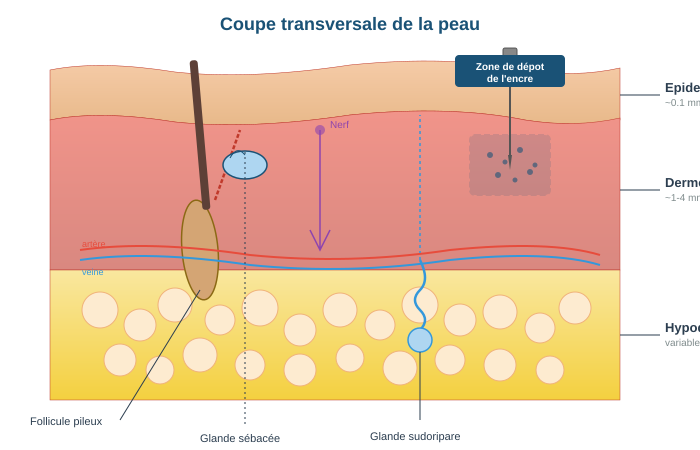
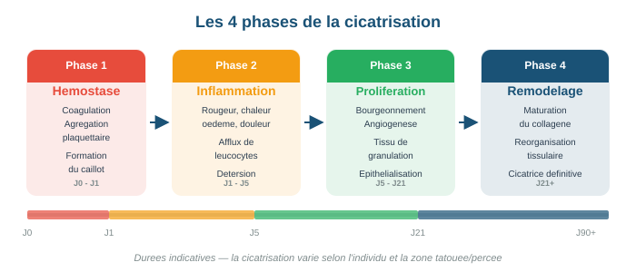
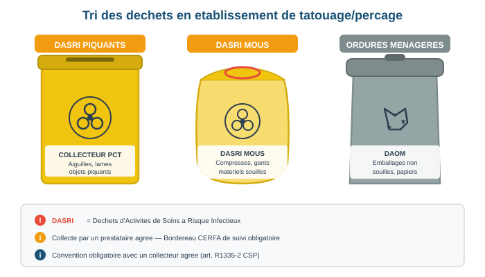

Support de formation
Hygiène & Salubrité
Certification aux conditions d'hygiène et salubrité pour la réalisation des techniques de tatouage et du perçage corporel
Sommaire
- Connaissance et mise en oeuvre de la réglementation relative au tatouage et au perçage corporel, aux produits de tatouage et aux bijoux de perçage corporel, de la vigilance relative aux produits de tatouage et des recommandations existantes
- Généralités d'anatomie et de physiologie de la peau et des muqueuses, notamment la cicatrisation
- Connaissance des micro-organismes résidents et transitoires, de la flore cutanée et muqueuse
- Risques allergiques et infectieux, modes de contamination et précautions
- Stérilisation et désinfection du matériel, des instruments et des dispositifs, enregistrement des procédures et traçabilité
- Règles de protection du travailleur, gestion des AES, vaccination
- Gestion des achats et du matériel, élimination des déchets
- Exigences réglementaires des locaux et mobilier
- Procédures d'asepsie pour les gestes de tatouage et de perçage (PRATIQUE)
- Annexe A — Textes réglementaires de référence
- Annexe B — Normes applicables
- Annexe C — Glossaire
- Annexe D — Ressources et liens utiles
- Annexe E — Modèle de consentement éclairé
- Annexe F — Fiches de soins post-acte
- Annexe G — Fiches de procédures
- Annexe H — Produits désinfectants et antiseptiques
- Document D.1 — Grille d'évaluation finale
- Document D.2 — Examen final (Formation initiale)
- Document D.3 — Examen final (Renouvellement)
- Document D.4 — Auto-évaluation (Renouvellement)
Introduction
Ce support de formation couvre l'intégralité du programme défini par l'arrêté du 5 mars 2024 modifié, pris en application de l'article R.1311-3 du code de la santé publique, relatif à la formation des personnes qui mettent en oeuvre les techniques de tatouage par effraction cutanée et de perçage corporel.
La formation s'articule autour de 9 unités d'enseignement couvrant l'ensemble des compétences théoriques et pratiques requises. Elle est dispensée sur 3 jours consécutifs pour une durée minimale de 21 heures.
- Code de la santé publique : articles R.1311-1 à R.1311-12
- Arrêté du 5 mars 2024 modifié : programme de formation, annexes 1 à 6
- Règlement REACH (CE) n° 1907/2006 : substances chimiques
- Règlement (UE) 2020/2081 : restrictions sur les substances dans les encres de tatouage
- NF EN 17169 : norme européenne relative au tatouage
Public concerné
Toute personne souhaitant exercer l'activité de tatouage par effraction cutanée (tatouage, maquillage permanent, dermopigmentation) ou de perçage corporel (piercing) doit justifier de la certification prévue à l'article R.1311-3 du code de la santé publique.
Objectifs pédagogiques généraux
- Connaître et appliquer la réglementation en vigueur relative au tatouage et au perçage corporel
- Identifier les risques infectieux et allergiques liés à la pratique
- Maîtriser les protocoles de stérilisation, désinfection et asepsie
- Appliquer les règles de protection du professionnel et du client
- Assurer la traçabilité et la gestion des déchets conformément aux normes
- Mettre en oeuvre les procédures d'hygiène lors des gestes de tatouage et de perçage
Vue d'ensemble des 9 unités
| Unité | Intitulé | Durée indicative |
|---|---|---|
| U1 | Réglementation tatouage & perçage, produits, vigilance | 3h30 |
| U2 | Anatomie & physiologie de la peau et des muqueuses | 2h |
| U3 | Micro-organismes, flores cutanée et muqueuse | 2h |
| U4 | Risques allergiques et infectieux | 2h |
| U5 | Stérilisation et désinfection | 2h30 |
| U6 | Protection du travailleur, AES, vaccination | 2h30 |
| U7 | Gestion achats, matériel, déchets | 2h |
| U8 | Locaux et mobilier | 1h30 |
| U9 | Procédures d'asepsie — Pratique | 3h |
Les durées sont indicatives et peuvent être ajustées en fonction du niveau du groupe. La durée totale minimale de 21 heures sur 3 jours consécutifs est impérative.
Connaissance et mise en oeuvre de la réglementation relative au tatouage et au perçage corporel, aux produits de tatouage et aux bijoux de perçage corporel, de la vigilance relative aux produits de tatouage et des recommandations existantes
Objectifs pédagogiques
- Connaître le cadre réglementaire du tatouage et du perçage corporel en France
- Identifier les normes applicables (NF EN 17169, REACH, normes bijoux)
- Connaître les obligations de déclaration et de vigilance
- Identifier les pratiques interdites et les limites de l'exercice professionnel
1.1 Cadre législatif et réglementaire
1.1.1 Le code de la santé publique
L'encadrement des activités de tatouage et de perçage corporel relève du code de la santé publique, articles R.1311-1 à R.1311-12. Ces dispositions définissent :
- Article R.1311-1 : définition des techniques concernées (tatouage par effraction cutanée et perçage corporel)
- Article R.1311-3 : obligation de formation — toute personne pratiquant le tatouage ou le perçage corporel doit justifier de la certification aux conditions d'hygiène et de salubrité
- Article R.1311-6 : obligation de déclaration de l'activité auprès du directeur général de l'ARS territorialement compétente
- Article R.1311-7 : conditions d'hygiène et de salubrité des locaux et du matériel
- Article R.1311-12 : obligation d'information préalable du client avant tout acte
Article R.1311-3 du CSP : Toute personne qui met en oeuvre des techniques de tatouage, y compris de maquillage permanent, et de perçage corporel doit justifier d'une certification attestant qu'elle a suivi la formation aux conditions d'hygiène et de salubrité.
Article 2 de l'arrêté du 5 mars 2024 : La formation doit être renouvelée tous les 5 ans. Ce renouvellement garantit la mise à jour des connaissances en fonction de l'évolution des réglementations, des normes et des bonnes pratiques.
Sanctions : L'exercice sans certification valide expose à des sanctions pénales (contravention de 5e classe) et administratives (mise en demeure, fermeture par l'ARS).
1.1.2 L'arrêté du 5 mars 2024 modifié
Cet arrêté, pris en application de l'article R.1311-3, définit le programme de formation, les conditions d'habilitation des organismes de formation, et les modalités d'évaluation. Il comporte 6 annexes :
- Annexe 1 : programme de formation (9 unités d'enseignement)
- Annexe 2 : référentiel de compétences
- Annexe 3 : modalités d'évaluation
- Annexe 4 : composition du jury et de l'équipe pédagogique
- Annexe 5 : modèle de certification
- Annexe 6 : liste du matériel technique nécessaire aux formations
L'article 4 de l'arrêté et son annexe 6 listent le matériel technique devant être disponible lors de la formation : aiguilles stériles à usage unique, cathéters stériles à usage unique, pinces stériles, prothèses/bijoux de pose stériles. La composition de l'équipe pédagogique et du jury est détaillée à l'annexe 4 de l'arrêté.
1.1.3 Déclaration auprès de l'ARS
Conformément à l'article R.1311-6 du code de la santé publique, toute personne exerçant l'activité de tatouage ou de perçage corporel doit en faire la déclaration auprès du directeur général de l'Agence Régionale de Santé (ARS) territorialement compétente, préalablement à l'exercice de l'activité.
- Obtenir la certification : réussir la formation de 21 heures et obtenir l'attestation de formation conforme à l'arrêté du 5 mars 2024
- Préparer le dossier : attestation de formation, pièce d'identité, justificatif de domicile professionnel, description des locaux
- Déclarer en ligne : se rendre sur le site de l'ARS de votre région (ars.sante.fr) et remplir le formulaire de déclaration d'activité de tatouage/perçage
- Obtenir le récépissé : l'ARS délivre un récépissé de déclaration qui doit être affiché dans l'établissement
- Signaler tout changement : toute modification (changement de local, cessation d'activité) doit être déclarée à l'ARS
L'exercice de l'activité de tatouage ou de perçage corporel sans déclaration préalable auprès de l'ARS constitue une infraction. L'ARS peut effectuer des contrôles inopinés pour vérifier le respect des conditions d'hygiène et de salubrité (article R.1311-7). Le récépissé de déclaration et l'attestation de formation doivent être affichés de manière visible dans l'établissement.
1.2 La norme NF EN 17169
La norme européenne NF EN 17169 (Tatouage — Bonnes pratiques d'hygiène) est une norme volontaire qui définit les exigences d'hygiène pour la pratique du tatouage. Publiée en 2020, elle constitue le référentiel technique de bonnes pratiques au niveau européen.
Principaux domaines couverts par la NF EN 17169 :
- Hygiène du praticien : lavage des mains, port d'EPI (gants, masque si nécessaire), tenue professionnelle adaptée
- Préparation de la zone de travail : nettoyage et désinfection des surfaces, mise en place du champ stérile, organisation du poste de travail
- Gestion du matériel : usage unique privilégié, stérilisation du matériel réutilisable, traçabilité
- Préparation du client : information, consentement, préparation de la peau
- Réalisation de l'acte : technique aseptique, gestion des encres/pigments, ergonomie
- Soins post-acte : instructions écrites remises au client, suivi
- Gestion des déchets : tri, conditionnement, filière DASRI
- Locaux : aménagement, ventilation, surfaces lavables
La norme NF EN 17169 s'applique à toutes les techniques impliquant l'introduction de pigments dans la peau par effraction cutanée : tatouage artistique, maquillage permanent, dermopigmentation médicale ou esthétique. Bien que son application soit volontaire, elle constitue l'état de l'art et peut servir de référence en cas de litige ou de contrôle.
1.3 Réglementation des produits de tatouage — REACH
1.3.1 Le règlement REACH (CE) n° 1907/2006
Le règlement européen REACH (Registration, Evaluation, Authorisation and Restriction of Chemicals) encadre l'enregistrement, l'évaluation, l'autorisation et la restriction des substances chimiques au sein de l'Union européenne.
Depuis le 4 janvier 2022, l'entrée 75 de l'annexe XVII de REACH (introduite par le règlement (UE) 2020/2081) impose des restrictions spécifiques sur les substances utilisées dans les encres de tatouage et les produits de maquillage permanent.
1.3.2 Substances réglementées
Les restrictions portent sur :
- Substances CMR (Cancérigènes, Mutagènes, Reprotoxiques) : interdites dans les encres de tatouage
- Substances sensibilisantes : concentrations maximales fixées
- Colorants azoïques : certains colorants libérant des amines aromatiques cancérigènes sont interdits
- Métaux lourds : limites de concentration pour le plomb, le mercure, le cadmium, le chrome VI, le nickel, l'arsenic
- HAP (Hydrocarbures Aromatiques Polycycliques) : concentrations maximales définies
- Utiliser exclusivement des encres conformes à la réglementation REACH en vigueur
- Vérifier la fiche de données de sécurité (FDS) et l'étiquetage de chaque produit
- Conserver les fiches de traçabilité des lots d'encre utilisés (numéro de lot, date d'ouverture, date de péremption)
- Ne jamais mélanger des encres de fabricants différents sans vérifier la compatibilité
- Respecter les conditions de conservation recommandées par le fabricant
1.4 Réglementation et normes relatives aux bijoux de perçage corporel
1.4.1 Exigences générales
Les bijoux de première pose (bijoux implantés immédiatement après le perçage) doivent répondre à des exigences strictes de biocompatibilité, de résistance à la corrosion et de qualité de surface. Le code de la santé publique exige l'utilisation de matériaux adaptés au contact prolongé avec les tissus.
1.4.2 Matériaux autorisés pour la première pose
| Matériau | Norme/Standard | Caractéristiques |
|---|---|---|
| Titane de qualité implantaire | ASTM F-136 (Ti-6Al-4V ELI) | Biocompatible, hypoallergénique, léger, résistant à la corrosion. Matériau de référence pour la première pose. |
| Acier chirurgical | ASTM F-138 (316LVM) | Acier inoxydable à faible teneur en carbone, travaillé sous vide. Contient du nickel : à proscrire en cas d'allergie connue. |
| Niobium | — | Métal pur biocompatible, hypoallergénique, anodisable (colorable). Alternative au titane. |
| Or massif | 14k minimum (585/1000) | Or jaune, blanc ou rose. Minimum 14 carats. Pas de plaqué or ni de gold-filled en première pose. |
| Verre borosilicate | — | Verre de qualité médicale, lisse, inerte. Utilisé pour certains piercings génitaux ou étirements. |
1.4.3 Standards APP (Association of Professional Piercers)
L'APP est l'organisation internationale de référence pour les professionnels du perçage corporel. Ses standards définissent :
- Qualité du matériau : matériaux de grade implantaire exclusivement
- Finition de surface : poli miroir, absence de rayures, bavures ou aspérités
- Filetage interne : les bijoux à filetage interne (threadless ou internal threading) sont recommandés pour éviter de traumatiser le canal lors de l'insertion
- Dimensionnement : adaptation du diamètre et de la longueur du bijou à la morphologie et à la zone percée
- Stérilisation : tous les bijoux de première pose doivent être stérilisés avant insertion
- Acier 316L standard (non 316LVM)
- Argent sterling (925) — risque d'oxydation et d'allergie
- Plaqué or, gold-filled, vermeil
- Laiton, cuivre, zinc
- Plastique non médical, acrylique, silicone non implantaire
- Bijoux « fantaisie » ou de provenance non certifiée
1.5 Pratiques interdites
Certaines pratiques, bien qu'elles puissent être proposées dans un contexte esthétique, sont strictement interdites pour les professionnels du tatouage et du perçage corporel car elles relèvent exclusivement de l'exercice médical :
- Microneedling : technique de stimulation cutanée par micro-aiguilles, relevant de l'acte médical à visée thérapeutique ou esthétique (article L.4161-1 du code de la santé publique)
- Injection d'acide hyaluronique (Hyaluron Pen et similaires) : acte médical d'injection, même sans aiguille (dispositif à pression), constitue un exercice illégal de la médecine
- Détatouage : le retrait de tatouage par laser ou toute autre technique invasive est un acte médical relevant exclusivement d'un médecin
- Mésothérapie esthétique : injections intradermiques de substances à visée esthétique
- Blépharopigmentation (pigmentation des paupières) avec anesthésie locale injectable : l'anesthésie injectable est un acte médical
L'exercice de ces pratiques sans qualification médicale constitue un exercice illégal de la médecine, passible de sanctions pénales (article L.4161-5 du CSP) : jusqu'à 2 ans d'emprisonnement et 30 000 euros d'amende.
1.6 Consentement des mineurs
1.6.1 Cadre réglementaire (article R.1311-11)
L'article R.1311-11 du code de la santé publique encadre la réalisation d'actes de tatouage ou de perçage sur les personnes mineures :
- Tatouage : interdit sur les mineurs de moins de 16 ans. Entre 16 et 18 ans, le tatouage n'est autorisé qu'avec le consentement écrit du représentant légal (parent ou tuteur)
- Perçage corporel : autorisé sur les mineurs uniquement avec le consentement écrit du représentant légal, quel que soit l'âge
- Perçage des lobes d'oreilles : cas particulier, possible chez les mineurs avec consentement parental
1.6.2 Formalités obligatoires
- Obtenir une autorisation écrite datée et signée par le représentant légal
- Vérifier l'identité du mineur et celle du représentant légal (pièce d'identité)
- Informer le représentant légal des risques liés à l'acte
- Conserver l'autorisation dans le dossier de traçabilité
- Le représentant légal doit être présent ou joignable au moment de l'acte
1.7 Les produits de tatouage : types de pigments
1.7.1 Classification des pigments
Les encres de tatouage contiennent des pigments de différentes natures, dont les caractéristiques influencent la tenue, la couleur et les risques potentiels :
| Type | Composition | Caractéristiques | Points de vigilance |
|---|---|---|---|
| Pigments minéraux | Oxydes de fer, dioxyde de titane, oxydes de chrome | Stables, bonne tenue dans le temps, couleurs limitées (bruns, ocres, noirs, blancs) | Vérifier la pureté (absence de métaux lourds au-delà des seuils REACH) |
| Pigments organiques | Composés organiques de synthèse (azoïques, phtalocyanines, quinacridones) | Large gamme chromatique, couleurs vives, possibilité de dégradation UV | Certains colorants azoïques interdits (amines aromatiques), vérifier la conformité REACH |
| Pigments hybrides | Mélange de pigments minéraux et organiques | Combinent stabilité des minéraux et variété chromatique des organiques | Vérifier chaque composant individuellement |
1.7.2 Exigences relatives aux encres
- Étiquetage : nom commercial, liste des ingrédients (INCI), numéro de lot, date de péremption, nom et adresse du fabricant/importateur, mention « stérile »
- Stérilité : les encres doivent être stériles à l'ouverture et utilisées dans le respect de la durée de conservation après ouverture
- Conservation : respecter les conditions de température et de durée après ouverture indiquées par le fabricant
- Traçabilité : consigner le numéro de lot de chaque encre utilisée dans le dossier client
1.8 Déclaration des effets indésirables — Vigilance
1.8.1 Obligation de déclaration
Conformément à l'article L.513-10-8 du code de la santé publique et au règlement européen, tout professionnel est tenu de signaler les effets indésirables graves liés à l'utilisation de produits de tatouage.
1.8.2 Quand déclarer ?
- Réaction allergique sévère (urticaire généralisé, oedème, choc anaphylactique)
- Infection nécessitant un traitement médical
- Réaction granulomateuse persistante
- Tout effet indésirable grave ou inattendu lié à un produit de tatouage
1.8.3 Comment déclarer ?
La déclaration s'effectue via le portail de signalement des événements sanitaires indésirables du Ministère de la Santé (signalement.social-sante.gouv.fr) ou directement auprès de l'ANSES (Agence Nationale de Sécurité Sanitaire de l'alimentation, de l'environnement et du travail).
- Identification du déclarant (professionnel ou client)
- Description de l'effet indésirable (nature, gravité, délai d'apparition)
- Identification du produit (nom commercial, numéro de lot, fabricant)
- Zone du corps concernée
- Date de l'acte et date d'apparition de l'effet
- Tout document utile (photos, certificats médicaux)
Qui déclare ? Le professionnel (tatoueur, perceur), le client lui-même, ou un professionnel de santé.
Quoi déclarer ?
- Réaction allergique sévère (oedème, urticaire généralisée, choc)
- Infection locale ou systémique
- Réaction granulomateuse ou lichénoïde
- Tout effet inattendu survenant dans les semaines ou mois suivant l'acte
Comment ? Via le portail de signalement de l'ANSES : signalement.social-sante.gouv.fr
Informations à fournir : identité du client, date et nature de l'acte, marque et numéro de lot du produit, description et chronologie de l'effet indésirable, photos si possible.
1.9 Information préalable du client
1.9.1 Obligations (article R.1311-12)
Avant tout acte de tatouage ou de perçage, le professionnel doit informer le client, par écrit, de :
- La nature de l'acte envisagé (technique utilisée)
- Les risques auxquels il s'expose (infections, allergies, cicatrisation, etc.)
- Les précautions à respecter avant et après l'acte
- Les contre-indications connues (grossesse, immunodépression, traitement anticoagulant, etc.)
- Le caractère irréversible du tatouage ou les conditions de retrait d'un piercing
1.9.2 Consentement éclairé
Le professionnel doit recueillir le consentement libre et éclairé du client avant de procéder à l'acte. Ce consentement est matérialisé par la signature d'un formulaire daté, conservé dans le dossier de traçabilité.
Généralités d'anatomie et de physiologie de la peau et des muqueuses, notamment la cicatrisation
Objectifs pédagogiques
- Connaître la structure et les fonctions de la peau
- Comprendre les différences entre peau et muqueuses
- Maîtriser les mécanismes de cicatrisation
- Identifier les facteurs influençant la cicatrisation
2.1 Structure de la peau
La peau est l'organe le plus étendu du corps humain (environ 1,7 m² chez l'adulte, 3 à 5 kg). Elle constitue une barrière protectrice entre l'organisme et le milieu extérieur. Elle est composée de trois couches superposées :

Figure 1 — Coupe transversale de la peau : les pigments de tatouage sont deposés dans le derme
2.1.1 L'épiderme
Couche la plus superficielle, l'épiderme est un épithélium stratifié kératinisé. Il est composé de plusieurs couches cellulaires (de la profondeur à la surface) :
- Couche basale (stratum basale) : couche germinative, siège de la division cellulaire. Contient les mélanocytes (production de mélanine)
- Couche épineuse (stratum spinosum) : cellules reliées par des desmosomes, assurant la cohésion
- Couche granuleuse (stratum granulosum) : début de la kératinisation
- Couche cornée (stratum corneum) : cellules mortes kératinisées (cornéocytes), constituant la barrière externe
Les pigments de tatouage doivent être déposés dans le derme, au-delà de l'épiderme. Un dépôt trop superficiel (dans l'épiderme) entraîne une disparition rapide du pigment lors du renouvellement cellulaire. Un dépôt trop profond (hypoderme) provoque une diffusion du pigment (« blowout »).
2.1.2 Le derme
Le derme est un tissu conjonctif dense situé sous l'épiderme. Il assure la solidité, l'élasticité et la nutrition de la peau. Il se divise en :
- Derme papillaire (superficiel) : tissu conjonctif lâche, papilles dermiques, capillaires sanguins
- Derme réticulaire (profond) : tissu conjonctif dense, fibres de collagène et d'élastine entrecroisées
Le derme contient :
- Les vaisseaux sanguins et lymphatiques
- Les terminaisons nerveuses (récepteurs sensoriels)
- Les annexes cutanées : follicules pileux, glandes sébacées, glandes sudoripares
- Les cellules immunitaires : macrophages, mastocytes, cellules dendritiques
2.1.3 L'hypoderme
Couche la plus profonde, l'hypoderme est un tissu adipeux (graisse) qui assure l'isolation thermique, la protection mécanique et constitue une réserve énergétique. Son épaisseur varie considérablement selon les zones du corps.
2.2 Fonctions de la peau
- Protection : barrière mécanique contre les agents physiques, chimiques et biologiques
- Thermorégulation : sudation, vasodilatation/vasoconstriction
- Perception sensorielle : toucher, douleur, température, pression
- Immunité : première ligne de défense, cellules immunitaires résidentes
- Sécrétion : sébum (protection, hydratation), sueur
- Synthèse de vitamine D : sous l'action des UV
2.3 Les muqueuses
Les muqueuses tapissent les cavités corporelles en communication avec l'extérieur (bouche, nez, yeux, organes génitaux, anus). Contrairement à la peau, les muqueuses :
- Ne possèdent pas de couche cornée kératinisée (sauf muqueuse buccale partiellement)
- Sont plus fines et plus fragiles que la peau
- Sont richement vascularisées (saignement plus abondant lors du perçage)
- Sont en contact avec des flores microbiennes spécifiques (voir Unité 3)
- Présentent un temps de cicatrisation différent de la peau
Le perçage des muqueuses (langue, lèvre, septum nasal, organes génitaux) nécessite des précautions spécifiques : risque hémorragique accru, flores microbiennes à prendre en compte, choix du bijou adapté (matériau biocompatible, taille appropriée pour l'oedème initial), soins post-acte spécifiques.
2.4 La cicatrisation

Figure 2 — Les 4 phases de la cicatrisation cutanee
La cicatrisation est le processus physiologique de réparation tissulaire qui se met en place après toute effraction cutanée ou muqueuse. Elle se déroule en quatre phases successives :
2.4.1 Phase vasculaire et hémostatique (immédiate)
Dès la blessure, les vaisseaux lésés se contractent (vasoconstriction) pour limiter le saignement. Les plaquettes s'agrègent pour former un clou plaquettaire, puis la cascade de coagulation produit un caillot de fibrine.
2.4.2 Phase inflammatoire (J1 à J4)
Les signes classiques apparaissent : rougeur, chaleur, gonflement, douleur. Les cellules immunitaires (neutrophiles, macrophages) migrent vers la zone lésée pour éliminer les débris et combattre les agents infectieux. Cette phase est normale et nécessaire.
2.4.3 Phase de prolifération (J4 à J21)
Les fibroblastes produisent du collagène et de la matrice extracellulaire pour combler la perte de substance. De nouveaux vaisseaux se forment (angiogenèse). L'épiderme commence à se reconstituer depuis les berges de la plaie (réépithélialisation).
2.4.4 Phase de remodelage (3 semaines à 2 ans)
Le tissu cicatriciel se réorganise progressivement. Le collagène se restructure, la cicatrice s'aplanit et s'éclaircit. Cette phase peut durer jusqu'à 2 ans.
2.5 Facteurs influençant la cicatrisation
| Facteurs favorables | Facteurs défavorables |
|---|---|
| Bonne hygiène de la plaie | Infection |
| Alimentation équilibrée (vitamines A, C, zinc) | Tabagisme (diminue la microcirculation) |
| Hydratation adéquate | Diabète, immunodépression |
| Repos de la zone | Frottements mécaniques répétés |
| Suivi des consignes post-acte | Exposition solaire précoce |
| Âge jeune | Traitements (corticoïdes, anticoagulants, immunosuppresseurs) |
2.6 Particularités de la cicatrisation selon les zones
- Zones à peau fine (intérieur du bras, poignet, cou) : cicatrisation rapide mais risque de cicatrice visible
- Zones à peau épaisse (dos, épaules) : cicatrisation plus lente, risque de chéloïdes chez les sujets prédisposés
- Zones articulaires (doigts, genoux, coudes) : cicatrisation ralentie par les mouvements
- Muqueuses buccales : cicatrisation rapide (renouvellement cellulaire élevé, salive riche en facteurs de croissance)
- Cartilage (oreille, nez) : cicatrisation très lente (peu vascularisé), 6 à 12 mois
La cicatrisation d'un tatouage dure en moyenne 2 à 4 semaines pour la phase superficielle. Pendant cette période, les pigments sont progressivement encapsulés par les macrophages et les fibroblastes dans le derme, ce qui assure leur permanence. Une mauvaise cicatrisation peut entraîner une perte de pigment, une déformation du dessin ou une infection.
Connaissance des micro-organismes résidents et transitoires, de la flore cutanée et muqueuse
Objectifs pédagogiques
- Connaître les différents types de micro-organismes
- Distinguer flore résidente et flore transitoire
- Identifier les flores spécifiques selon les sites anatomiques (cutanée, buccale, oculaire, génitale, vaginale)
- Comprendre les implications pour la pratique du tatouage et du perçage
3.0 Définition générale des règles d'hygiène
L'hygiène désigne l'ensemble des principes, pratiques et comportements visant à préserver la santé et à prévenir les infections. En contexte de tatouage et perçage corporel, les règles d'hygiène ont pour objectif de :
- Prévenir la transmission croisée de micro-organismes entre le professionnel, le client et l'environnement
- Maintenir un environnement de travail sûr par le nettoyage, la désinfection et la stérilisation
- Protéger le professionnel par le port d'EPI et la vaccination
- Protéger le client par l'asepsie des actes et les consignes post-acte
Ces règles s'appuient sur les précautions standard (SF2H), la norme NF EN 17169, et les recommandations de l'OMS en matière d'hygiène des mains.
3.1 Les micro-organismes : généralités

Figure 3 — Les principaux types de micro-organismes
3.1.1 Classification
Les micro-organismes sont des êtres vivants invisibles à l'oeil nu. On distingue :
- Bactéries : organismes unicellulaires procaryotes (sans noyau). Certaines sont pathogènes, d'autres font partie de la flore normale (commensales)
- Virus : agents infectieux nécessitant une cellule hôte pour se reproduire (VIH, VHB, VHC, HPV, herpès)
- Champignons (mycètes) : levures (Candida) et moisissures (dermatophytes)
- Parasites : organismes vivant aux dépens d'un hôte (ex : Demodex sur la peau)
- Prions : agents infectieux protéiques (pas de pertinence directe pour le tatouage/perçage, mais concept important en stérilisation)
3.1.2 Notion de pathogénicité
- Micro-organismes commensaux : présents naturellement sans provoquer de maladie (flore résidente)
- Micro-organismes opportunistes : commensaux qui deviennent pathogènes dans certaines conditions (immunodépression, effraction cutanée)
- Micro-organismes pathogènes stricts : toujours responsables de maladie (ex : VIH, VHB)
3.2 Flore résidente et flore transitoire
3.2.1 Flore résidente (commensale)
La flore résidente est l'ensemble des micro-organismes habituellement présents sur la peau et les muqueuses d'un individu sain. Elle est :
- Stable et permanente : se reconstitue rapidement après lavage
- Protectrice : compétition avec les pathogènes (effet barrière)
- Spécifique à chaque site anatomique
- Difficile à éliminer totalement par le lavage simple
3.2.2 Flore transitoire (contaminante)
La flore transitoire est composée de micro-organismes acquis par contact avec l'environnement (surfaces, objets, autres personnes). Elle est :
- Variable : dépend des contacts récents
- Potentiellement pathogène : peut contenir des germes dangereux
- Facilement éliminable par le lavage des mains et l'antisepsie
- Principale source de contamination croisée
Le lavage simple des mains élimine la flore transitoire. La friction hydroalcoolique (FHA) réduit la flore transitoire ET une partie de la flore résidente. Le lavage chirurgical (antiseptique) réduit significativement les deux flores. Pour les actes de tatouage et de perçage, le lavage antiseptique des mains suivi du port de gants stériles est recommandé.
3.3 Flores spécifiques selon les sites anatomiques
3.3.1 Flore cutanée
La peau héberge une flore abondante et diversifiée, variant selon les zones :
- Zones sèches (bras, jambes) : faible densité bactérienne, prédominance de Staphylococcus epidermidis, Corynebacterium
- Zones humides (aisselles, plis, aine) : densité élevée, Staphylococcus, Corynebacterium, levures Malassezia
- Zones sébacées (visage, dos, cuir chevelu) : Cutibacterium acnes, Malassezia, Staphylococcus
Le principal pathogène cutané est Staphylococcus aureus (staphylocoque doré), présent chez 20 à 30 % de la population (portage nasal), responsable d'infections cutanées (folliculites, furoncles, impétigo) et pouvant contaminer un tatouage ou un piercing.
3.3.2 Flore buccale
La cavité buccale héberge l'une des flores les plus diversifiées du corps humain (plus de 700 espèces identifiées). Elle comprend :
- Bactéries : Streptococcus (S. mutans, S. sanguinis), Actinomyces, Veillonella, Fusobacterium, Porphyromonas
- Levures : Candida albicans (présente chez 30 à 50 % des individus sains)
- Virus : herpès simplex (HSV-1) en portage latent
La richesse de la flore buccale augmente le risque infectieux lors d'un perçage intra-oral. Les soins post-acte incluent des bains de bouche antiseptiques (sans alcool) et une hygiène buccale renforcée. Le bijou de première pose doit être en matériau biocompatible résistant à la corrosion en milieu humide (titane ASTM F-136 recommandé).
3.3.3 Flore oculaire
La surface oculaire (conjonctive) héberge une flore limitée mais importante à connaître pour les actes de dermopigmentation péri-oculaire :
- Bactéries : Staphylococcus epidermidis, Corynebacterium, Propionibacterium
- Protection naturelle : les larmes contiennent du lysozyme (antibactérien) et des immunoglobulines (IgA)
3.3.4 Flore génitale masculine
Le pénis et le scrotum hébergent une flore spécifique :
- Flore prédominante : Corynebacterium, Staphylococcus epidermidis, Prevotella
- Zone du gland / prépuce : flore anaérobie plus abondante chez les hommes non circoncis
- Risque IST : possibilité de portage asymptomatique de Chlamydia, HPV, herpès
3.3.5 Flore vaginale
La flore vaginale est dominée par les lactobacilles (Lactobacillus) qui maintiennent un pH acide (3,8 à 4,5) protecteur :
- Flore de Döderlein : lactobacilles produisant de l'acide lactique et du peroxyde d'hydrogène
- Déséquilibre : une rupture de cet équilibre (antibiothérapie, stress, acte invasif) peut favoriser des infections (vaginose bactérienne, candidose)
- Flore pathogène potentielle : Gardnerella vaginalis, Candida, Streptococcus agalactiae
Les piercings génitaux (capuchon clitoridien, lèvres, pénis, scrotum) imposent une prise en compte rigoureuse de la flore locale. Les soins post-acte doivent préserver l'équilibre de la flore (éviter les antiseptiques agressifs qui détruiraient les lactobacilles vaginaux). Le sérum physiologique est préféré pour le nettoyage. Le bijou doit être en titane ASTM F-136 ou niobium.
3.4 Notion de biofilm
Un biofilm est une communauté organisée de micro-organismes adhérant à une surface et protégés par une matrice extracellulaire (polysaccharides). Les biofilms :
- Se forment sur les surfaces (instruments, bijoux, plan de travail)
- Sont 100 à 1000 fois plus résistants aux antiseptiques et antibiotiques que les bactéries libres
- Nécessitent un nettoyage mécanique (brossage, ultrasons) pour être éliminés avant la désinfection/stérilisation
Le matériel réutilisable doit être nettoyé et décontaminé immédiatement après usage (pré-désinfection) pour empêcher la formation de biofilms. Les bijoux de perçage en cicatrisation doivent être nettoyés régulièrement pour éviter l'accumulation de biofilm sur le bijou et dans le canal du piercing.
Risques allergiques et infectieux, modes de contamination et précautions
Objectifs pédagogiques
- Connaître les risques allergiques liés aux pigments et aux bijoux
- Identifier les risques infectieux (bactériens, viraux, fongiques)
- Comprendre les modes de contamination
- Connaître les contre-indications et les interdictions
- Maîtriser les soins post-acte différenciés
4.1 Risques allergiques
4.1.1 Allergie aux pigments de tatouage
Les réactions allergiques aux encres de tatouage sont principalement liées à la composition chimique des pigments :
- Pigments minéraux : les oxydes de fer (ocre, brun, noir) sont généralement bien tolérés. Le dioxyde de titane (blanc) est considéré comme inerte. Le risque allergique est faible mais des réactions aux impuretés métalliques (chrome, cobalt, nickel) sont possibles
- Pigments organiques : les colorants azoïques (rouges, jaunes) présentent un risque allergique plus élevé. Les pigments rouges (naphthol AS, PR 170, PR 210) sont les plus fréquemment incriminés dans les réactions allergiques
- Pigments hybrides : le risque dépend de chaque composant. La vérification de la composition complète est indispensable
4.1.2 Types de réactions allergiques
- Eczéma de contact : dermatite au niveau du tatouage, prurit, desquamation
- Réaction granulomateuse : formation de granulomes (nodules inflammatoires) dans le tatouage, réaction à corps étranger
- Réaction lichénoïde : aspect de lichen plan localisé au tatouage
- Pseudolymphome : prolifération lymphocytaire réactionnelle (rare)
- Photo-allergie : réaction déclenchée par l'exposition aux UV (certains pigments jaunes)
4.1.3 Allergie aux bijoux de perçage
L'allergie au nickel est la plus fréquente (10 à 15 % de la population européenne). Elle se manifeste par une dermatite de contact au niveau du piercing. Pour prévenir ce risque :
- Utiliser du titane ASTM F-136 (sans nickel) ou du niobium en première pose
- L'acier 316LVM contient du nickel : à éviter chez les patients allergiques connus
- Interroger systématiquement le client sur ses antécédents allergiques avant le perçage
4.2 Risques infectieux
Le risque infectieux désigne la probabilité qu'un agent pathogène (bactérie, virus, champignon, parasite) pénètre dans l'organisme et provoque une infection. En tatouage et perçage, ce risque est accru car l'acte implique une effraction cutanée ou muqueuse volontaire, créant une porte d'entrée directe pour les micro-organismes.
Les facteurs aggravants incluent : le non-respect des protocoles d'asepsie, l'utilisation de matériel non stérile, l'absence de vaccination du professionnel, et le non-respect des consignes post-acte par le client.
4.2.1 Infections bactériennes
- Staphylococcus aureus : infection la plus fréquente (rougeur, pus, douleur, fièvre). Risque de SARM (Staphylocoque Aureus Résistant à la Méticilline)
- Streptococcus pyogenes : érysipèle, cellulite infectieuse
- Pseudomonas aeruginosa : infection par eau contaminée ou encres diluées non stériles
- Mycobactéries atypiques (M. chelonae, M. abscessus) : infections profondes à évolution lente, souvent liées à des encres contaminées
4.2.2 Infections virales
- VHB (Hépatite B) : virus très résistant dans l'environnement, survit sur les surfaces sèches jusqu'à 7 jours. Transmission par le sang. Vaccination obligatoire recommandée pour les professionnels
- VHC (Hépatite C) : transmission par le sang, pas de vaccin disponible. Risque principal lors du tatouage dans des conditions d'hygiène insuffisantes
- VIH : transmission par le sang, virus fragile dans l'environnement mais risque lors d'un AES
- HPV (Papillomavirus) : verrues, condylomes. Transmission par contact direct
- HSV (Herpès) : récurrence possible au niveau du tatouage ou du piercing
4.2.3 Infections fongiques
- Candidose : surinfection par Candida, favorisée par l'humidité et l'occlusion (piercings buccaux)
- Dermatophytose : infection cutanée superficielle
4.3 Modes de contamination
| Mode | Description | Exemples en tatouage/perçage |
|---|---|---|
| Contact direct | Transmission de personne à personne par contact peau/muqueuse | Mains non lavées, absence de gants |
| Contact indirect | Transmission via un objet ou une surface contaminée | Matériel non stérilisé, surfaces non désinfectées, encres contaminées |
| Voie sanguine | Introduction directe de pathogènes dans le sang | Aiguille contaminée, AES (piqûre accidentelle) |
| Gouttelettes | Projection de gouttelettes (toux, éternuements) | Absence de masque lors d'un piercing oral |
| Aéroportée | Micro-organismes en suspension dans l'air | Ventilation insuffisante des locaux |
4.4 Contre-indications et précautions
4.4.1 Contre-indications absolues
- Infection active au niveau de la zone à tatouer/percer
- Allergie connue à un composant de l'encre ou du matériau du bijou
- Dermatose évolutive au niveau de la zone (eczéma, psoriasis en poussée, herpès actif)
- Trouble de la coagulation non contrôlé ou traitement anticoagulant à dose curative
4.4.2 Contre-indications relatives (nécessitant un avis médical)
- Grossesse et allaitement : risque infectieux, contre-indication de principe
- Diabète : cicatrisation ralentie, risque infectieux accru
- Immunodépression : traitement immunosuppresseur, chimiothérapie, VIH non contrôlé
- Maladies cardiaques valvulaires : risque d'endocardite (perçage)
- Épilepsie non stabilisée
- Traitement par isotrétinoïne (Roaccutane) : fragilité cutanée accrue, attendre 6 à 12 mois après l'arrêt
- Antécédent de chéloïdes : risque de cicatrisation pathologique
4.5 Soins post-acte différenciés
4.5.1 Soins post-tatouage
- Retirer le pansement après 2 à 4 heures (ou selon le type de film utilisé)
- Nettoyer délicatement à l'eau tiède et savon doux (pH neutre, sans parfum)
- Sécher en tamponnant avec un tissu propre non pelucheux
- Appliquer une fine couche de crème cicatrisante recommandée par le professionnel (2 à 3 fois par jour)
- Ne pas gratter les croûtes ou les pellicules
- Éviter pendant 2 à 4 semaines : bains, piscine, sauna, exposition solaire directe, vêtements serrés sur la zone
- Durée de cicatrisation : 2 à 4 semaines (phase superficielle)
4.5.2 Soins post-perçage
- Nettoyer 2 fois par jour avec du sérum physiologique stérile (NaCl 0,9 %)
- Ne pas manipuler le bijou avec les mains non lavées
- Ne pas tourner le bijou (contrairement aux idées reçues, cela traumatise le canal)
- Ne pas retirer le bijou pendant la cicatrisation
- Éviter : antiseptiques agressifs (Bétadine, alcool), eau de mer, piscine, maquillage sur la zone
- Durée de cicatrisation variable selon la zone :
| Zone | Cicatrisation complète |
|---|---|
| Lobe d'oreille | 6 à 8 semaines |
| Cartilage (hélix, tragus, conque) | 6 à 12 mois |
| Narine | 3 à 6 mois |
| Septum | 2 à 3 mois |
| Langue | 4 à 6 semaines |
| Lèvre | 2 à 3 mois |
| Nombril | 6 à 12 mois |
| Téton | 6 à 12 mois |
| Piercings génitaux | 2 à 6 mois (selon la zone) |
4.5.3 Soins post-maquillage permanent
- Nettoyer délicatement avec de l'eau micellaire douce ou de l'eau tiède
- Appliquer la crème cicatrisante prescrite, en couche fine, 2 à 3 fois par jour
- Ne pas gratter les micro-croûtes
- Éviter : maquillage sur la zone pendant 7 à 10 jours, exposition solaire, sauna, piscine
- Protéger la zone du soleil (SPF 50) après cicatrisation pour préserver la couleur
- Durée de cicatrisation : 7 à 14 jours (phase active)
- Une retouche est généralement nécessaire 4 à 6 semaines après le premier acte
Le professionnel doit remettre à chaque client une fiche de soins post-acte écrite, adaptée au type d'acte réalisé (tatouage, perçage ou maquillage permanent). Cette fiche constitue une preuve de l'information délivrée et un outil de prévention des complications.
4.6 Signes d'alerte — Quand consulter ?
Le client doit être informé des signes nécessitant une consultation médicale :
- Rougeur croissante s'étendant au-delà de la zone tatouée/percée
- Douleur intense ou croissante après 48-72 heures
- Pus (écoulement jaune-verdâtre, malodorant)
- Fièvre (> 38,5°C)
- Gonflement important ou disproportionné
- Stries rouges partant de la zone (lymphangite)
- Réaction allergique généralisée (urticaire, difficulté respiratoire)
4.6.1 Infection vs réaction inflammatoire « normale »
| Critère | Réaction inflammatoire normale | Infection |
|---|---|---|
| Rougeur | Localisée autour de la zone, diminue progressivement (J1-J5) | S'étend au-delà de la zone, s'aggrave après J3-J5 |
| Gonflement | Léger, proportionnel à la zone travaillée | Important, disproportionné, tendu |
| Douleur | Modérée, type « coup de soleil », diminue chaque jour | Intense, pulsatile, s'aggrave |
| Chaleur | Tiède au toucher | Chaleur vive, peau brûlante |
| Écoulement | Suintement clair (lymphe), croûtes normales | Pus (jaune, vert, malodorant) |
| Fièvre | Absente | Présente (> 38 °C) |
| Traînées rouges | Absentes | Présentes (signe de lymphangite — urgence) |
| Évolution | Amélioration progressive jour après jour | Aggravation après J3, pas d'amélioration à J7 |
En cas de signes d'infection, orienter immédiatement le client vers un médecin. Ne jamais tenter de traiter l'infection soi-même. Documenter les signes observés et informer le client de l'importance d'une consultation rapide.
4.6.2 Démarche de déclaration d'un événement indésirable
En cas d'événement indésirable lié à un produit de tatouage ou un bijou de perçage, le professionnel est tenu de le signaler :
- Documenter l'événement : date, nature de l'acte, produits utilisés (marque, lot), description et chronologie des symptômes, photos
- Signaler via le portail national : signalement.social-sante.gouv.fr
- Conserver le produit incriminé et sa documentation (FDS, étiquette)
- Orienter le client vers un médecin pour prise en charge
- Notifier l'ARS si l'événement est grave (hospitalisation, séquelles)
Stérilisation et désinfection du matériel, des instruments et des dispositifs, enregistrement des procédures et traçabilité
Objectifs pédagogiques
- Connaître les normes de stérilisation applicables (EN 13060, EN ISO 17665-1, ISO 11607-1)
- Maîtriser les protocoles de nettoyage, désinfection et stérilisation
- Connaître le traitement spécifique du matériel thermosensible
- Assurer la traçabilité des opérations de stérilisation
5.1 Définitions et niveaux de traitement
- Nettoyage : élimination mécanique des salissures visibles (sang, débris organiques)
- Pré-désinfection (décontamination) : immersion dans un produit détergent-désinfectant pour abaisser le niveau de contamination et protéger le personnel
- Désinfection : opération visant à réduire le nombre de micro-organismes à un niveau acceptable. N'élimine pas les spores
- Stérilisation : destruction de tous les micro-organismes, y compris les spores bactériennes. Niveau le plus élevé de traitement
Tout matériel en contact avec le sang ou les tissus sous-cutanés doit être soit à usage unique (éliminé en DASRI après utilisation), soit stérilisé selon un protocole validé avant chaque utilisation. La désinfection seule est insuffisante pour le matériel invasif.
5.2 Les normes de stérilisation
5.2.1 NF EN 13060 — Petits stérilisateurs à vapeur d'eau
La norme NF EN 13060 définit les exigences et les essais pour les petits stérilisateurs à vapeur d'eau (autoclaves de table), qui sont le type d'équipement utilisé dans les établissements de tatouage et de perçage.
Elle distingue trois types de cycles :
| Type de cycle | Application | Caractéristiques |
|---|---|---|
| Cycle B (Big sterilizer) | Instruments emballés, corps creux, charges poreuses, textiles | Cycle le plus performant : pré-vide fractionné, adapté à tous les types de charges. Recommandé pour les établissements |
| Cycle S (Specific) | Charges définies par le fabricant | Adapté à des charges spécifiques selon les indications du fabricant de l'autoclave |
| Cycle N (Naked) | Instruments massifs non emballés uniquement | Cycle basique, ne convient pas pour les charges emballées ou les corps creux. Utilisation immédiate obligatoire |

Schéma d'un autoclave de table — Cycle B recommandé pour les établissements
5.2.2 NF EN ISO 17665-1 — Stérilisation par chaleur humide
La norme NF EN ISO 17665-1 spécifie les exigences pour le développement, la validation et le contrôle de routine d'un procédé de stérilisation par chaleur humide (vapeur saturée). Elle définit les paramètres critiques :
- Température : 134°C pour les cycles B standards
- Pression : environ 2,1 bars à 134°C
- Durée de plateau : minimum 18 minutes à 134°C (ou 30 minutes à 121°C)
- Qualité de la vapeur : vapeur saturée, sans air résiduel
5.2.3 NF EN ISO 11607-1 — Emballages pour la stérilisation
La norme NF EN ISO 11607-1 définit les exigences pour les systèmes d'emballage utilisés pour maintenir la stérilité des dispositifs médicaux après stérilisation :
- Sachets de stérilisation : sachets papier/plastique thermoscellables avec indicateur de passage (virage de couleur)
- Scellage : thermosoudure continue, sans défaut, sans pli
- Étiquetage : date de stérilisation, date de péremption, numéro de cycle, contenu
- Stockage : dans un lieu propre, sec, à l'abri de la lumière et de la poussière
- Durée de validité : selon les conditions de stockage (généralement 1 à 6 mois pour les sachets simples, selon le système de stockage)
5.3 Protocole de stérilisation du matériel réutilisable

Figure 4 — Les 7 etapes du circuit de sterilisation
Le traitement du matériel réutilisable suit un protocole en étapes séquentielles :
Étape 1 — Pré-désinfection (décontamination)
Immersion immédiate des instruments souillés dans un bain de produit détergent-désinfectant conforme aux normes EN (bactéricide, fongicide, virucide). Durée : selon les instructions du fabricant du produit (généralement 15 à 30 minutes).
Étape 2 — Rinçage
Rinçage abondant à l'eau du réseau pour éliminer le produit de pré-désinfection et les résidus organiques.
Étape 3 — Nettoyage
Nettoyage mécanique (brossage) ou par ultrasons pour éliminer toutes les souillures résiduelles. Le nettoyage par bac à ultrasons est recommandé car il atteint les zones inaccessibles au brossage (lumières, rainures, charnières).
Étape 4 — Rinçage
Rinçage abondant à l'eau osmosée ou déminéralisée (pour éviter les dépôts calcaires qui nuisent à la stérilisation).
Étape 5 — Séchage
Séchage complet des instruments (air comprimé médical ou champs propres non pelucheux). L'eau résiduelle nuit à la qualité de la stérilisation et peut favoriser la corrosion.
Étape 6 — Conditionnement
Mise sous sachet de stérilisation conforme NF EN ISO 11607-1. Thermoscellage. Étiquetage (date, contenu, numéro de cycle).
Étape 7 — Stérilisation à l'autoclave
Cycle B à 134°C pendant 18 minutes (plateau de stérilisation). Vérification des paramètres après le cycle (diagramme de stérilisation, indicateurs physico-chimiques).
- Indicateurs physiques : vérification de la température, pression et durée sur le diagramme du cycle (imprimante intégrée ou enregistrement électronique)
- Indicateurs chimiques : intégrateurs chimiques de classe 5 ou 6 (norme ISO 11140) placés dans la charge
- Indicateurs de passage : virage de couleur sur les sachets (classe 1) — confirme le passage en autoclave mais ne garantit pas la stérilité
- Test de Bowie-Dick : test quotidien de pénétration de vapeur (autoclaves de type B)
- Indicateurs biologiques : ampoules de spores (Geobacillus stearothermophilus) — test le plus fiable, recommandé hebdomadairement
5.4 Traitement du matériel thermosensible
Certains instruments ou dispositifs ne supportent pas la stérilisation par chaleur humide (autoclave). Pour ces matériels thermosensibles, un protocole de désinfection de haut niveau en 7 étapes est appliqué :
Protocole 7 étapes pour matériel thermosensible
- Pré-désinfection : immersion dans un détergent-désinfectant enzymatique
- Rinçage : eau du réseau
- Nettoyage : nettoyage mécanique ou ultrasons avec un produit compatible
- Rinçage : eau osmosée
- Désinfection de haut niveau : immersion dans un désinfectant de haut niveau (acide peracétique, glutaraldéhyde 2 %) pendant la durée préconisée par le fabricant
- Rinçage terminal : eau stérile ou eau osmosée stérile (rinçage abondant)
- Séchage et stockage : séchage immédiat, stockage en conditions aseptiques, utilisation dans les plus brefs délais
La désinfection de haut niveau ne garantit PAS la stérilité au même niveau que l'autoclave (pas d'élimination certaine des spores les plus résistantes). Elle ne doit être utilisée que pour le matériel réellement incompatible avec l'autoclave. Privilégier systématiquement le matériel autoclavable ou à usage unique.
5.5 Traçabilité
5.5.1 Registre de stérilisation
Un registre de stérilisation doit être tenu à jour et conserver :
- La date et l'heure de chaque cycle
- Le numéro de cycle
- Le contenu de la charge (nature et nombre d'instruments)
- Les paramètres du cycle (température, pression, durée)
- Les résultats des indicateurs (physiques, chimiques, biologiques)
- La signature de l'opérateur
- Le diagramme ou ticket d'impression du cycle (archivé)
5.5.2 Traçabilité client
Pour chaque acte, le dossier de traçabilité client doit comporter :
- L'identification du client
- La date de l'acte
- La nature de l'acte (tatouage / perçage / maquillage permanent)
- La zone du corps concernée
- Les numéros de lot des encres/pigments utilisés
- Le numéro de cycle de stérilisation des instruments
- Le numéro de lot des aiguilles/modules à usage unique
- Le type et la taille du bijou posé (perçage)
- Le consentement signé du client
- La fiche de soins post-acte remise
Les registres de traçabilité (stérilisation et client) doivent être conservés pendant une durée minimale de 5 ans. En cas de contrôle de l'ARS ou en cas de plainte, ces documents constituent la preuve du respect des bonnes pratiques.
Règles de protection du travailleur, gestion des accidents d'exposition au sang (AES), vaccination
Objectifs pédagogiques
- Connaître les équipements de protection individuelle (EPI)
- Maîtriser la technique de pose des gants stériles
- Savoir réagir en cas d'accident d'exposition au sang (AES)
- Connaître les obligations vaccinales
6.1 Équipements de protection individuelle (EPI)
6.1.1 Les gants
Le port de gants est obligatoire pour tout acte de tatouage ou de perçage. Ils constituent la première barrière contre la contamination croisée.
- Type : gants à usage unique, en nitrile (recommandé) ou en latex (vérifier l'absence d'allergie). Le vinyle est déconseillé (porosité, faible résistance)
- Taille : ajustée à la main du praticien (ni trop large, ni trop serré)
- Changement : changer de gants entre chaque client, après tout contact avec une surface non stérile, en cas de perforation, et toutes les 45 à 60 minutes maximum
- Sans poudre : les gants poudrés sont interdits (risque d'allergie au latex, contamination particulaire)
6.1.2 Technique de pose des gants stériles
Pour les actes nécessitant des gants stériles (perçage, certains tatouages), la technique de pose est la suivante :
- Préparation : lavage antiseptique des mains (ou friction hydroalcoolique chirurgicale). Séchage complet. Vérifier l'intégrité de l'emballage et la date de péremption
- Ouverture de l'emballage extérieur : ouvrir le sachet extérieur en le tirant par les côtés, sans toucher l'emballage intérieur. Déposer l'emballage intérieur sur une surface propre
- Ouverture de l'emballage intérieur : saisir les rabats de l'emballage intérieur par les coins (zone non stérile) et l'ouvrir à plat. Les gants apparaissent pliés, poignets repliés vers l'extérieur
- Premier gant : avec la main dominante, saisir le gant opposé par le revers du poignet (face interne, partie repliée). Enfiler le gant sur la main non dominante sans toucher la face externe
- Second gant : glisser les doigts gantés de la main non dominante sous le revers du second gant (face externe stérile). Enfiler le second gant sur la main dominante
- Ajustement : ajuster les gants doigt par doigt en ne touchant que les faces externes stériles. Dérouler les poignets en évitant de toucher la peau ou les manches
- Vérification : vérifier l'absence de perforation (visuelle). Les mains gantées ne doivent plus toucher aucune surface non stérile
Source : Université de Caen — NorSims
6.1.3 Autres EPI
- Masque chirurgical : recommandé lors des piercings buccaux/nasaux et en cas de symptômes respiratoires. Protège le client des projections du praticien
- Lunettes de protection : recommandées en cas de risque de projection (sang, liquides corporels)
- Tablier/blouse : tenue professionnelle lavable à 60°C minimum, changée quotidiennement
- Sur-chaussures : si nécessaire selon l'organisation du local
6.1.4 Précautions standard — SF2H
La Société Française d'Hygiène Hospitalière (SF2H) définit les précautions standard comme le socle de la prévention du risque infectieux. Elles s'appliquent à tout professionnel exposé au risque de contact avec du sang ou des liquides biologiques, y compris les professionnels du tatouage et du perçage corporel.
Les précautions standard constituent le socle de la prévention du risque infectieux. Elles s'appliquent à tout acte, pour tout client, quel que soit son statut infectieux connu ou supposé. Elles partent du principe que tout sang et tout liquide biologique sont potentiellement contaminants.
En tatouage et perçage, chaque acte implique un contact avec du sang — les précautions standard ne sont donc pas optionnelles mais obligatoires à chaque instant.
- Hygiène des mains : lavage ou friction hydroalcoolique avant et après tout contact avec le client, avant et après le port de gants
- Port d'équipements de protection individuelle (EPI) : gants à usage unique pour tout acte, masque chirurgical si risque de projection, lunettes de protection si nécessaire
- Prévention des accidents d'exposition au sang (AES) : ne jamais recapuchonner les aiguilles, élimination immédiate dans le collecteur DASRI, utilisation de matériel de sécurité
- Gestion des liquides biologiques : nettoyage immédiat de toute projection de sang, utilisation de produits détergents-désinfectants, protection des surfaces
- Gestion du matériel souillé : pré-désinfection immédiate du matériel réutilisable, élimination du matériel à usage unique en DASRI
- Entretien de l'environnement : nettoyage et désinfection des surfaces entre chaque client, protocole codifié d'entretien des locaux
- Gestion des déchets : tri rigoureux (DASRI / DAOM), filière d'élimination conforme, traçabilité (bordereau BSD)
Source : Société Française d'Hygiène Hospitalière (SF2H) — Recommandations pour la prévention de la transmission croisée
6.1.5 Tableau des EPI selon les recommandations SF2H
| EPI | Quand ? | Type recommandé | Source |
|---|---|---|---|
| Gants non stériles | Tout contact avec la peau lésée, le sang, les muqueuses | Nitrile, sans poudre, à usage unique | SF2H / NF EN 17169 |
| Gants stériles | Acte de perçage, mise en place du champ stérile | Nitrile ou latex stérile, sans poudre | SF2H |
| Masque chirurgical | Piercing oral/nasal, symptômes respiratoires du praticien | Type II ou IIR | SF2H |
| Lunettes de protection | Risque de projection de sang ou liquides biologiques | Lunettes à coques latérales ou visière | SF2H |
| Tablier / blouse | Pendant tout acte | Tissu lavable à 60°C ou à usage unique | NF EN 17169 |
Source : Société Française d'Hygiène Hospitalière — Recommandations pour la prévention des infections
6.2 Accidents d'Exposition au Sang (AES)
6.2.1 Définition
Un AES est tout contact accidentel avec du sang ou un liquide biologique contaminé par du sang, survenant par :
- Effraction cutanée : piqûre d'aiguille, coupure par un objet tranchant contaminé
- Contact muqueux : projection de sang dans les yeux, la bouche, le nez
- Contact cutané : sur peau lésée (coupure, excoriation, eczéma)
6.2.2 Conduite à tenir en cas d'AES
- Immédiatement : ne pas faire saigner. Nettoyer la plaie à l'eau et au savon (5 minutes). Rincer
- Désinfecter : tremper dans du Dakin ou de la Javel diluée à 2,6 % pendant 5 minutes. Ou : alcool à 70° pendant 5 minutes. En cas de projection oculaire : rincer abondamment au sérum physiologique pendant 5 minutes
- Consulter en urgence : se rendre aux urgences hospitalières dans les 4 heures (idéalement dans les 2 heures) pour évaluation du risque et décision de traitement post-exposition (TPE) si nécessaire
- Déclarer : déclaration d'accident du travail dans les 24 heures auprès de l'employeur (ou de la CPAM pour les indépendants)
- Suivi sérologique : bilan initial (VIH, VHB, VHC) puis suivi à 6 semaines, 3 mois et 6 mois
Le guide RPAS (Recommandations pour la Prévention des Accidents d'Exposition au Sang), publié sous l'égide du GERES (Groupe d'Étude sur le Risque d'Exposition des Soignants) et de la SF2H, détaille les mesures de prévention des AES en milieu professionnel. Ses recommandations sont directement applicables aux professionnels du tatouage et du perçage corporel.
Source : GERES / SF2H — Guide de prévention des AES
6.2.3 Prévention des AES
- Ne jamais recapuchonner une aiguille usagée
- Éliminer immédiatement les objets piquants/coupants dans le collecteur DASRI (conteneur à aiguilles jaune, norme NF X 30-500)
- Le collecteur doit être à portée de main du praticien, jamais rempli au-delà de la ligne de remplissage maximal
- Travailler dans de bonnes conditions (éclairage, ergonomie, calme)
- Port systématique de gants adaptés
6.3 Vaccination
6.3.1 Vaccinations recommandées
Pour les professionnels du tatouage et du perçage, les vaccinations suivantes sont fortement recommandées :
| Vaccination | Justification | Schéma |
|---|---|---|
| Hépatite B (VHB) | Virus très résistant, survie 7 jours sur surfaces sèches, transmission sanguine. Risque professionnel majeur | Schéma initial : 3 doses (M0, M1, M6). Contrôle sérologique (anti-HBs > 10 UI/L) recommandé |
| Tétanos | Rappels obligatoires dans le cadre du calendrier vaccinal | Rappels tous les 20 ans (adulte) selon le calendrier en vigueur |
| Grippe saisonnière | Prévention de la transmission aux clients et continuité d'activité | Annuelle |
| COVID-19 | Selon les recommandations en vigueur | Selon le calendrier vaccinal |
La vaccination contre l'hépatite B est essentielle pour tout professionnel exposé au risque sanguin. Le virus de l'hépatite B est 50 à 100 fois plus infectieux que le VIH. Un professionnel non vacciné qui se pique avec une aiguille contaminée par le VHB a un risque de contamination de 6 à 30 % (contre 0,3 % pour le VIH). La vérification de l'immunité (dosage des anticorps anti-HBs) est recommandée.
6.3.2 Vaccination obligatoire vs recommandée
| Vaccin | Statut | Justification |
|---|---|---|
| Hépatite B | Très fortement recommandé | VHB 50-100x plus infectieux que le VIH. Risque de contamination de 6-30% après piqûre. Pas d'obligation légale pour les non-soignants, mais indispensable en pratique. |
| DTP (Diphtérie, Tétanos, Polio) | Obligatoire | Obligation vaccinale pour tout adulte (rappel tous les 20 ans). Tétanos : risque lié aux plaies. |
| Grippe | Recommandé | Protection du professionnel et des clients immunodéprimés. |
| COVID-19 | Recommandé | Selon recommandations en vigueur et situation épidémique. |
| Coqueluche | Recommandé | Rappel à 25 ans, puis tous les 20 ans (combiné DTP). |
Il est recommandé de vérifier son statut vaccinal auprès de son médecin traitant et de tenir à jour son carnet de vaccination. Le contrôle des anticorps anti-HBs (taux protecteur ≥ 10 UI/L) est conseillé après la vaccination contre l'hépatite B.
6.4 Hygiène des mains
6.4.1 Quand se laver les mains ?
- En arrivant à l'établissement
- Avant et après chaque acte sur un client
- Avant de mettre les gants et après les avoir retirés
- Après avoir touché du matériel souillé
- Après être allé aux toilettes
- Après s'être mouché, avoir toussé ou éternué
- Avant et après avoir mangé

Figure 5 — Technique de lavage des mains en 7 etapes (Source : OMS / SF2H)
6.4.2 Technique de lavage
- Lavage simple (30 secondes) : eau + savon doux. Élimine la flore transitoire. Pour les gestes courants
- Lavage antiseptique (1 minute) : eau + savon antiseptique (chlorhexidine ou povidone iodée). Élimine la flore transitoire et réduit la flore résidente. Avant les actes de tatouage/perçage
- Friction hydroalcoolique (30 secondes) : solution ou gel hydroalcoolique sur mains sèches et visuellement propres. Alternative au lavage pour les gestes courants. Ne remplace pas le lavage en cas de souillure visible
6.4.3 Prérequis pour l'hygiène des mains
- Ongles courts, sans vernis ni faux ongles
- Pas de bijoux aux mains et poignets (bagues, bracelets, montres)
- Peau des mains en bon état (pas de coupures, gerçures non protégées)
- Utilisation d'une crème hydratante compatible en fin de journée pour prévenir les irritations
Technique de lavage des mains en 7 étapes selon l'OMS
6.4.4 Friction à la solution hydroalcoolique (SHA)
La friction hydroalcoolique est la technique de référence pour l'hygiène des mains selon la SF2H. Elle est plus rapide (20-30 secondes), plus efficace sur la flore transitoire et mieux tolérée que le lavage au savon.
- Paume contre paume — frictionner les paumes entre elles
- Paume sur dos — paume de la main droite sur le dos de la main gauche, et inversement
- Doigts entrelacés — paumes face à face, doigts entrelacés
- Dos des doigts — dos des doigts contre la paume opposée, doigts emboîtés
- Pouces — friction par rotation du pouce droit dans la paume gauche, et inversement
- Ongles — friction par rotation des doigts joints dans la paume opposée
- Poignets — friction des poignets
Durée : 20 à 30 secondes avec 3 mL de SHA. Les mains doivent rester humides pendant toute la durée de la friction.

Technique de friction à la SHA en 7 étapes
| Situation | Technique recommandée |
|---|---|
| Mains visiblement propres (entre deux clients) | Friction SHA (20-30 s) |
| Mains visiblement souillées ou mouillées | Lavage au savon (40-60 s) |
| Avant enfilage de gants stériles | Friction SHA chirurgicale (1 min 30) |
| Après retrait de gants | Friction SHA |
| Après contact avec du sang | Lavage au savon puis friction SHA |
Gestion des achats et du matériel, élimination des déchets
Objectifs pédagogiques
- Connaître les exigences pour l'achat des encres, aiguilles et bijoux
- Appliquer le règlement REACH pour les produits de tatouage
- Maîtriser les normes relatives aux bijoux de perçage
- Gérer la filière d'élimination des DASRI
7.1 Gestion des achats
7.1.1 Encres et pigments
L'achat des encres de tatouage et des pigments de maquillage permanent est encadré par le règlement REACH (voir Unité 1). Le professionnel doit :
- S'approvisionner auprès de fournisseurs conformes à la réglementation européenne
- Exiger la fiche de données de sécurité (FDS) à jour pour chaque produit
- Vérifier la conformité de l'étiquetage : nom, composition (INCI), numéro de lot, date de fabrication/péremption, nom du fabricant/importateur, mention de conformité REACH
- Vérifier que les encres portent la mention « conforme au règlement (UE) 2020/2081 » ou équivalent
- Tenir un registre des achats (date, produit, fournisseur, numéro de lot, quantité)
- Respecter les conditions de stockage recommandées (température, lumière)
L'utilisation d'encres non conformes à la réglementation REACH expose le professionnel à des sanctions administratives et pénales, ainsi qu'à une mise en cause de sa responsabilité civile en cas de dommage pour le client. En cas de doute sur la conformité d'un produit, ne pas l'utiliser et contacter le fournisseur.
7.1.2 Aiguilles et modules
- Utiliser exclusivement des aiguilles à usage unique, stériles, emballées individuellement
- Vérifier l'intégrité de l'emballage avant chaque utilisation (emballage intact, indicateur de stérilité conforme)
- Vérifier la date de péremption
- Ne jamais réutiliser une aiguille, même sur le même client
- Éliminer immédiatement après usage dans le collecteur DASRI
7.1.3 Bijoux de perçage
L'achat des bijoux de première pose doit respecter les normes de qualité (voir Unité 1, section 1.4). Critères d'achat :
- Certificat matière : exiger le certificat attestant la conformité du matériau (ASTM F-136 pour le titane, ASTM F-138 pour l'acier 316LVM)
- Finition : poli miroir, absence de défauts de surface
- Filetage : préférer le filetage interne (internal threading ou threadless)
- Traçabilité : chaque bijou doit être identifiable (numéro de lot du fournisseur)
- Stérilisation : les bijoux doivent être stérilisés avant la pose (autoclave cycle B)
7.1.4 Matériel technique (annexe 6 de l'arrêté)
L'arrêté du 5 mars 2024 (annexe 6) liste le matériel technique devant être disponible lors des formations et, par extension, dans tout établissement professionnel :
- Aiguilles stériles à usage unique (différents groupages)
- Cathéters stériles à usage unique (pour le perçage)
- Pinces stériles (Pennington, anneau, etc.)
- Prothèses/bijoux de pose stériles (différentes tailles et types)
- Autoclave de type B conforme NF EN 13060
- Collecteurs DASRI conformes NF X 30-500
- Produits de désinfection et d'antisepsie
- Gants stériles et non stériles
- Champs stériles
7.2 Gestion du matériel en cours d'utilisation
7.2.1 Matériel à usage unique
La majeure partie du matériel en contact avec le client est à usage unique :
- Aiguilles/modules/cartouches de tatouage
- Cathéters de perçage (aiguilles creuses)
- Gants
- Godets d'encre (capsules individuelles)
- Champs de protection (draps, protège-machines)
- Rasoirs jetables
- Compresses
7.2.2 Matériel réutilisable
Certains instruments sont réutilisables après stérilisation :
- Pinces de perçage (Pennington, anneau)
- Tiges de transfert (receiving tubes)
- Embouts de dermographe (si démontables et autoclavables)
Ces instruments suivent le protocole de stérilisation décrit à l'Unité 5.
7.3 Élimination des déchets — DASRI

Figure 6 — Les 3 filieres de tri des dechets en etablissement de tatouage/percage
7.3.1 Classification des déchets
| Type de déchet | Exemples | Conditionnement |
|---|---|---|
| DASRI piquants/coupants/tranchants (PCT) | Aiguilles, lames, cathéters | Collecteur rigide jaune (NF X 30-500), fermable définitivement |
| DASRI mous | Compresses souillées, gants, champs, godets d'encre, papier essuie-tout souillé | Sac ou carton jaune à double emballage (NF X 30-501) |
| DAOM (Déchets Assimilables aux Ordures Ménagères) | Emballages non souillés, papier, carton | Poubelle classique |
7.3.2 Filière d'élimination des DASRI
- Convention avec un prestataire agréé : obligatoire. L'établissement doit avoir un contrat avec un collecteur de DASRI agréé par la préfecture
- Bordereau de suivi (BSD DASRI) : formulaire CERFA assurant la traçabilité de l'élimination. Le producteur (l'établissement) doit conserver le bordereau pendant 3 ans
- Fréquence de collecte : au minimum tous les 3 mois pour les petits producteurs (< 5 kg/mois), ou plus fréquemment selon le volume
- Entreposage : dans un local dédié, identifié, à l'écart des zones d'activité et du public. Durée maximale d'entreposage : 3 mois (petits producteurs)
- Traitement final : incinération dans une installation classée (ICPE)
- Jeter des DASRI dans les poubelles ménagères
- Mélanger DASRI et déchets ménagers
- Compacter ou broyer des DASRI
- Remplir un collecteur PCT au-delà de la ligne de remplissage maximal
- Laisser un collecteur PCT ouvert sans surveillance
7.3.3 Bordereau de suivi des déchets (BSD CERFA)
Le bordereau de suivi des déchets (formulaire CERFA n° 11351) est un document obligatoire assurant la traçabilité de l'élimination des DASRI du producteur jusqu'au centre de traitement. Il comporte :
| Rubrique | Contenu |
|---|---|
| Producteur | Nom, adresse, SIRET de l'établissement producteur de DASRI |
| Collecteur-transporteur | Nom du prestataire agréé, n° d'agrément, date de collecte |
| Installation de traitement | Nom et adresse du centre d'incinération (ICPE) |
| Type de déchets | PCT (piquants/coupants) et/ou DASRI mous |
| Quantité | Poids estimé en kg |
| Signatures | Producteur, collecteur et installation de traitement |
Le producteur doit conserver le bordereau pendant 3 ans minimum. En cas de non-retour du bordereau complété dans un délai de 1 mois, le producteur doit alerter le préfet.
7.3.4 Encres et produits chimiques
- Les encres périmées ou non conformes doivent être éliminées via la filière des déchets chimiques (déchetterie professionnelle ou prestataire spécialisé)
- Ne jamais vider les restes d'encre dans l'évier ou les toilettes
- Les godets d'encre à usage unique souillés sont des DASRI mous
Exigences réglementaires des locaux et mobilier
Objectifs pédagogiques
- Connaître les exigences réglementaires concernant les locaux
- Identifier les zones fonctionnelles d'un établissement
- Appliquer la norme NF EN 17169 aux locaux
- Assurer l'entretien et la désinfection des surfaces
8.1 Cadre réglementaire
L'article R.1311-7 du code de la santé publique et la norme NF EN 17169 définissent les exigences relatives aux locaux dans lesquels sont pratiqués les actes de tatouage et de perçage corporel.
8.1.1 Exigences générales
- Les locaux doivent être dédiés à l'activité de tatouage/perçage (pas d'activité incompatible dans le même espace)
- Les locaux doivent être propres, en bon état d'entretien et permettre un nettoyage et une désinfection efficaces
- Les animaux de compagnie sont interdits dans les zones de travail
- Il est interdit de fumer dans l'ensemble des locaux
- La consommation d'alcool et de substances psychoactives est interdite pour le praticien et le client
8.1.2 Surfaces et revêtements
- Sols : revêtement lisse, imperméable, résistant aux produits de nettoyage et de désinfection, sans joints ouverts. PVC soudé, résine, carrelage à joints étanches
- Murs : revêtement lisse, lavable, résistant à l'humidité et aux désinfectants. Peinture lessivable, carrelage, panneaux stratifiés
- Plans de travail : surfaces lisses, non poreuses, résistantes aux désinfectants. Acier inoxydable, Corian, stratifié haute pression
- Plafonds : lisses, propres, sans moisissures
8.2 Organisation des zones fonctionnelles

Figure 7 — Les 5 zones fonctionnelles et le circuit « marche en avant »
L'établissement doit être organisé en zones distinctes pour garantir la marche en avant (du propre vers le sale) et éviter les contaminations croisées :
8.2.1 Zone d'accueil
- Espace de réception des clients, séparé de la zone de travail
- Affichage obligatoire : certificat de formation H&S, déclaration ARS, tarifs, informations sur les risques, consignes de soins post-acte
- Portfolio, book de réalisations
8.2.2 Zone de travail (poste de tatouage/perçage)
- Poste individuel : chaque poste de travail doit être individualisé et délimité
- Fauteuil/table d'examen : recouvert d'un matériau lavable et désinfectable, avec protection à usage unique (drap d'examen)
- Plan de travail : surface lisse, non poreuse, protégée par un champ à usage unique
- Éclairage : éclairage adapté, suffisant pour la réalisation de l'acte (lampe d'appoint orientable recommandée)
- Point d'eau : lavabo à commande non manuelle (pied, coude, capteur) à proximité de chaque poste, avec distributeur de savon et essuie-mains à usage unique
- Collecteur DASRI : à portée de main, fixé ou lesté pour éviter tout renversement
8.2.3 Zone de stérilisation/nettoyage
- Zone séparée de la zone de travail, idéalement dans un local distinct
- Zone sale : bac de pré-désinfection, bac à ultrasons, rinçage
- Zone propre : conditionnement (soudeuse de sachets), autoclave, stockage du matériel stérile
- Circulation du matériel de la zone sale vers la zone propre (marche en avant)
8.2.4 Zone de stockage
- Stockage des consommables : aiguilles, gants, compresses — dans un espace propre, sec, à l'abri de la poussière
- Stockage des encres : selon les conditions du fabricant (température, lumière)
- Stockage du matériel stérilisé : dans un meuble fermé, propre, identifié
- Stockage des DASRI : local ou zone dédiée, identifiée, à l'écart des zones de travail et du public
8.2.5 Sanitaires
- Toilettes accessibles aux clients et au personnel
- Équipées de savon, essuie-mains à usage unique et poubelle
- Séparées de la zone de travail
8.3 Ventilation et climat
- Ventilation : aération naturelle ou mécanique (VMC) permettant un renouvellement d'air suffisant
- Température : adaptée au confort du client (légèrement dévêtu) et du praticien (21-24°C recommandé)
- Hygrométrie : éviter l'excès d'humidité (développement de moisissures)
8.4 Entretien et désinfection des locaux
8.4.1 Protocole de nettoyage
| Fréquence | Actions |
|---|---|
| Entre chaque client | Nettoyage et désinfection du poste de travail (plan de travail, fauteuil, lampe, surfaces touchées). Remplacement des protections à usage unique. Évacuation des DASRI |
| Quotidien | Nettoyage des sols (balayage humide + détergent-désinfectant). Nettoyage des sanitaires. Vidange des poubelles (DAOM). Vérification du niveau de remplissage des collecteurs DASRI |
| Hebdomadaire | Nettoyage approfondi des surfaces (murs, rebords, poignées). Vérification des stocks. Maintenance de l'autoclave (purge, nettoyage de la cuve) |
| Mensuel | Nettoyage des vitres, luminaires, bouches de ventilation. Vérification des dates de péremption des produits |
8.4.2 Produits de nettoyage et désinfection
- Utiliser des produits détergents-désinfectants conformes aux normes EN (bactéricide, fongicide, virucide)
- Respecter les concentrations et les temps de contact indiqués par le fabricant
- Utiliser des lavettes à usage unique ou des lavettes microfibres lavées à 60°C minimum
- Principe du « nettoyage de haut en bas et du propre vers le sale »
8.4.3 Principaux produits désinfectants
| Produit | Usage | Spectre | Temps de contact | Précautions |
|---|---|---|---|---|
| Détergent-désinfectant surfaces (ex : Surfanios, Anios Clean Excel) | Plans de travail, fauteuil, poignées, lampes | Bactéricide, fongicide, virucide (EN 14476) | 5 à 15 min selon produit | Respecter la dilution. Ne pas rincer sauf contact alimentaire. |
| Lingettes pré-imprégnées (ex : Surfa'Safe Premium) | Désinfection rapide entre deux clients | Bactéricide, virucide | Contact humide ≥ 1 min | Usage unique. Jeter en DAOM. |
| Eau de Javel (hypochlorite de sodium 2,6%) | Désinfection des sols, surfaces résistantes | Bactéricide, fongicide, virucide, sporicide | 10-15 min | Ne jamais mélanger avec un acide. Diluer selon usage. Rincer après contact. |
| Alcool 70° (éthanol/isopropanol) | Petites surfaces lisses (clipcords, switch, poignées) | Bactéricide, virucide (action rapide) | Contact 30 s | Inflammable. Pas d'action sporicide. Inefficace sur surfaces souillées. |
| Acide peracétique (ex : Anioxyde 1000) | Désinfection de haut niveau — matériel thermosensible | Bactéricide, fongicide, virucide, sporicide | 10-30 min selon concentration | Rincer abondamment à l'eau stérile. Ne remplace PAS la stérilisation. |
| Détergent pré-désinfectant (ex : Aniosyme DD1, Hexanios G+R) | Immersion du matériel réutilisable (étape 1 du circuit de stérilisation) | Bactéricide, fongicide | 15-30 min | Renouveler le bain à chaque utilisation. Dilution selon fabricant. |
- Toujours nettoyer avant de désinfecter — un désinfectant est inactif sur une surface souillée
- Respecter la dilution et le temps de contact indiqués par le fabricant
- Porter des gants lors de la manipulation des produits concentrés
- Ne jamais mélanger deux produits différents
- Conserver les FDS de chaque produit utilisé
- Retirer les gants, les champs de protection à usage unique, les godets d'encre → collecteur DASRI
- Nettoyer et désinfecter le plan de travail avec un détergent-désinfectant de surface
- Nettoyer et désinfecter le fauteuil/table
- Désinfecter les surfaces fréquemment touchées (poignées, interrupteurs, accoudoirs)
- Mettre en place de nouvelles protections à usage unique
- Se laver les mains
Procédures d'asepsie pour les gestes de tatouage et de perçage (PRATIQUE)
Objectifs pédagogiques
- Préparer un poste de travail aseptique
- Mettre en place un champ stérile
- Réaliser l'antisepsie cutanée avant l'acte
- Appliquer les procédures d'asepsie pendant l'acte de tatouage et de perçage
- Connaître les règles de conservation des antiseptiques après ouverture
9.1 Préparation du poste de travail

Figure 8 — Poste de travail avec champ sterile et materiel dispose
9.1.1 Mise en place du champ stérile
Le champ stérile est une zone délimitée sur le plan de travail, maintenue en conditions aseptiques pendant toute la durée de l'acte. Il constitue la barrière entre l'environnement contaminé et le matériel stérile.
- Surface propre : nettoyer et désinfecter le plan de travail avec un détergent-désinfectant de surface. Laisser sécher (temps de contact)
- Drap de champ stérile : déposer un champ stérile à usage unique (non tissé, imperméable) sur la surface de travail. Ne pas toucher la face supérieure du champ avec les mains non gantées
- Disposition du matériel : disposer le matériel stérile (instruments, aiguilles, godets) sur le champ stérile en utilisant une technique aseptique (gants stériles ou pince stérile)
- Ouverture des sachets : ouvrir les sachets de stérilisation en pelant les bords, laisser tomber le contenu sur le champ sans toucher la face interne du sachet
- Maintien de la stérilité : ne pas passer les mains au-dessus du champ stérile. Tout objet qui quitte le champ est considéré comme contaminé
- Le champ stérile est préparé juste avant l'acte, jamais à l'avance
- La bordure du champ (2 à 3 cm) est considérée comme non stérile
- Tout matériel tombé du champ est contaminé et doit être remplacé
- Si la stérilité du champ est compromise (mouillé, touché, durée excessive), il doit être refait entièrement
- Le champ stérile est à usage unique : il est éliminé en DASRI après l'acte
9.1.2 Préparation du matériel
Avant l'arrivée du client, préparer :
- Le plan de travail (nettoyé, champ stérile en place)
- Le matériel stérile : aiguilles/modules, godets, compresses
- Les encres : quantité nécessaire versée dans des godets individuels à usage unique
- Les produits d'antisepsie : solution antiseptique, sérum physiologique
- Les consommables : gants (stériles et non stériles), film protecteur, rasoirs, marqueurs cutanés
- Le collecteur DASRI à portée de main
- Le dossier client (consentement, fiche de traçabilité)
9.2 Préparation du client
9.2.1 Accueil et vérification
- Vérifier l'identité du client (mineurs : vérifier l'autorisation parentale)
- Vérifier l'absence de contre-indications (questionnaire de santé)
- Recueillir le consentement éclairé (formulaire signé)
- Installer le client confortablement
9.2.2 Antisepsie de la zone
La préparation de la peau/muqueuse avant l'acte comprend :
- Rasage (si nécessaire) : avec un rasoir jetable stérile, dans le sens du poil. Éliminer le rasoir en DASRI
- Première application : nettoyer la zone avec une compresse stérile imbibée de solution antiseptique. Mouvement concentrique du centre vers l'extérieur
- Séchage : laisser sécher à l'air (ne pas essuyer)
- Seconde application : renouveler l'application d'antiseptique. Laisser sécher (temps de contact de l'antiseptique)
- Ne plus toucher la zone préparée avant la mise en place du stencil ou le début de l'acte
9.3 Conservation des antiseptiques après ouverture
La durée de conservation des antiseptiques après ouverture est limitée et doit être rigoureusement respectée :
| Produit | Conservation après ouverture | Conditions |
|---|---|---|
| Chlorhexidine alcoolique | 1 mois après ouverture | Flacon fermé, à l'abri de la lumière et de la chaleur. Noter la date d'ouverture sur le flacon |
| Povidone iodée (Bétadine) | 1 mois après ouverture (solution) / usage immédiat (unidoses) | Flacon fermé, température ambiante (15-25°C) |
| Dakin stabilisé | 1 mois après ouverture | Flacon fermé, à l'abri de la lumière, température < 25°C |
| Alcool à 70° | Variable selon le conditionnement | Flacon fermé. Préférer les conditionnements unitaires |
| Sérum physiologique | 24 heures (flacons) / usage unique (dosettes) | Privilégier les dosettes à usage unique |
- Noter la date d'ouverture sur chaque flacon au moment de la première utilisation
- Ne jamais reconditionner un antiseptique (verser d'un grand flacon dans un petit)
- Ne jamais compléter un flacon entamé avec du produit neuf
- Privilégier les conditionnements unitaires (dosettes, unidoses) pour garantir la stérilité
- Éliminer tout produit dont la date de péremption ou la durée après ouverture est dépassée
9.4 Procédure d'asepsie pendant l'acte de tatouage
- Lavage antiseptique des mains
- Pose des gants (stériles si exigé, ou gants non stériles propres pour le tatouage artistique standard selon la NF EN 17169)
- Vérification du champ stérile et du matériel
- Réalisation de l'acte en respectant le principe « une main propre, une main sale » : la main dominante (machine) reste dans le champ stérile, l'autre main gère les éléments potentiellement contaminés (peau du client, réglages)
- Utiliser une quantité minimale d'encre dans les godets pour limiter le gaspillage et le risque de contamination
- Changer de gants si contamination, perforation, ou changement de zone
- Essuyer l'excédent d'encre avec des compresses stériles imbibées de solution antiseptique ou de sérum physiologique
- En cas d'interruption prolongée, recouvrir le travail en cours et renouveler l'antisepsie à la reprise
9.5 Procédure d'asepsie pendant l'acte de perçage
- Lavage antiseptique des mains
- Pose des gants stériles (technique décrite en Unité 6)
- Antisepsie de la zone (double application, voir section 9.2.2)
- Marquage : repérer le point d'entrée et de sortie avec un marqueur cutané stérile ou un cure-dent trempé dans le violet de gentiane
- Mise en place de la pince (si utilisée) : pince stérile (Pennington ou anneau selon la zone). Stabilise le tissu
- Insertion du cathéter/aiguille : geste sûr et rapide, aiguille/cathéter stérile à usage unique
- Insertion du bijou : transfert du bijou stérile dans le canal via le cathéter ou la tige de transfert. Fixation de la fermeture
- Nettoyage final : nettoyer délicatement la zone avec du sérum physiologique stérile
- Remise de la fiche de soins post-acte personnalisée
9.6 Procédure d'asepsie pour le maquillage permanent
- Lavage antiseptique des mains + pose de gants
- Démaquillage de la zone avec un produit doux adapté (zone péri-oculaire : démaquillant ophtalmologique)
- Antisepsie de la zone : solution antiseptique compatible avec la zone (chlorhexidine aqueuse pour les zones sensibles, jamais d'alcool autour des yeux)
- Dessin préliminaire : au crayon dermographique stérile, validation par le client
- Préparation des pigments : verser dans des godets à usage unique sur le champ stérile
- Réalisation : technique adaptée (machine rotative, hand-poke), aiguille/module stérile à usage unique
- Nettoyage intermédiaire : compresses stériles imbibées de sérum physiologique
- Application de crème cicatrisante en fin d'acte
- Fiche de soins post-acte spécifique maquillage permanent
9.7 Après l'acte — Nettoyage et désinfection
- Élimination des DASRI : aiguilles → collecteur PCT ; compresses, godets, gants, champs → sac DASRI mous
- Pré-désinfection du matériel réutilisable : immersion immédiate (voir Unité 5)
- Nettoyage et désinfection du poste de travail : toutes les surfaces, le fauteuil, la lampe, les poignées (voir Unité 8)
- Retrait et élimination des gants
- Lavage des mains
- Compléter le dossier de traçabilité : numéros de lot (encres, aiguilles, bijou), numéro de cycle de stérilisation, consentement, fiche de soins remise
Annexe A — Textes réglementaires de référence
Code de la santé publique
- Articles R.1311-1 à R.1311-12 — Dispositions relatives au tatouage et au perçage corporel
- Article R.1311-3 — Obligation de formation
- Article R.1311-6 — Déclaration en préfecture
- Article R.1311-11 — Consentement des mineurs (autorisation parentale écrite)
- Article R.1311-12 — Information préalable obligatoire du client
Arrêtés et décrets
- Arrêté du 5 mars 2024 modifié — Formation des professionnels du tatouage et du perçage
- Décret n° 2008-149 du 19 février 2008 — Conditions d'hygiène et de salubrité
Règlements européens
- Règlement REACH (CE) n° 1907/2006 — Enregistrement, évaluation, autorisation et restriction des substances chimiques
- Règlement (UE) 2020/2081 — Restrictions relatives aux substances dans les encres de tatouage et le maquillage permanent (entrée 75 de l'annexe XVII de REACH)
- Résolution ResAP(2008)1 du Conseil de l'Europe — Exigences et critères pour la sécurité des tatouages et du maquillage permanent
Annexe B — Normes applicables
Tatouage
- NF EN 17169 — Tatouage — Bonnes pratiques d'hygiène et de salubrité
Stérilisation et conditionnement
- NF EN ISO 11607-1 — Emballages des dispositifs médicaux stérilisés au stade terminal — Exigences relatives aux matériaux, systèmes de barrière stérile et systèmes d'emballage
- NF EN 13060 — Petits stérilisateurs à la vapeur d'eau
- NF EN ISO 17665-1 — Stérilisation des produits de santé — Chaleur humide
Bijoux de perçage
- Recommandations APP (Association of Professional Piercers) — Standards internationaux pour les bijoux de première pose
- ASTM F-136 — Titane de qualité implantaire (Ti-6Al-4V ELI)
- ASTM F-138 — Acier chirurgical 316LVM
- ISO 5832-1 — Implants chirurgicaux — Matériaux métalliques
Désinfection et antisepsie
- NF EN 14885 — Antiseptiques et désinfectants chimiques — Application des normes européennes
Annexe C — Glossaire
| Terme | Définition |
|---|---|
| AES | Accident d'Exposition au Sang — tout contact percutané ou muqueux avec du sang ou un liquide biologique contaminé |
| Antisepsie | Opération visant à éliminer ou tuer les micro-organismes sur les tissus vivants (peau, muqueuses) |
| Antiseptique | Produit destiné à réduire ou éliminer les micro-organismes sur les tissus vivants (ex : chlorhexidine, povidone iodée) |
| Asepsie | Ensemble des mesures visant à empêcher l'introduction de micro-organismes dans un site stérile ou une plaie |
| Autoclave | Appareil de stérilisation par la vapeur d'eau sous pression (134°C, 2,1 bars). Référence : NF EN 13060 |
| Bactéricide | Agent capable de tuer les bactéries |
| Biocompatibilité | Capacité d'un matériau à être toléré par les tissus vivants sans provoquer de réaction indésirable |
| Biofilm | Communauté organisée de micro-organismes adhérant à une surface, protégée par une matrice extracellulaire, 100 à 1000 fois plus résistante aux antiseptiques |
| BSD | Bordereau de Suivi des Déchets — document CERFA assurant la traçabilité de l'élimination des DASRI |
| Champ stérile | Zone délimitée sur le plan de travail, maintenue en conditions aseptiques pendant la durée de l'acte. À usage unique |
| CMR | Cancérigène, Mutagène, Reprotoxique — catégorie de substances interdites dans les encres de tatouage (REACH) |
| Consentement éclairé | Accord libre et informé du client, matérialisé par un formulaire signé, après information sur les risques et les soins |
| Cycle B | Cycle de stérilisation le plus performant (pré-vide fractionné), adapté à tous les types de charges y compris emballées. Recommandé pour les établissements |
| DAOM | Déchets Assimilables aux Ordures Ménagères — emballages non souillés, papier, carton |
| DASRI | Déchets d'Activités de Soins à Risques Infectieux — aiguilles, compresses souillées, gants, etc. Filière d'élimination spécifique obligatoire |
| Dermopigmentation | Introduction de pigments dans le derme à des fins esthétiques ou réparatrices (maquillage permanent, reconstruction aréolaire) |
| Désinfectant | Produit destiné à réduire les micro-organismes sur les surfaces inertes (plans de travail, instruments). Ne s'utilise pas sur les tissus vivants |
| Détergent-désinfectant | Produit combinant action nettoyante (élimination des salissures) et désinfectante. Utilisé pour les surfaces et la pré-désinfection |
| DM | Dispositif Médical |
| Effraction cutanée | Acte qui implique une rupture volontaire de la barrière cutanée (tatouage, perçage) |
| EPI | Équipement de Protection Individuelle — gants, masque, lunettes, tablier |
| FDS | Fiche de Données de Sécurité — document fourni par le fabricant décrivant la composition, les dangers et les précautions d'emploi d'un produit |
| FHA / SHA | Friction Hydro-Alcoolique / Solution Hydro-Alcoolique — technique de désinfection des mains par friction avec un gel ou une solution à base d'alcool |
| Flore résidente | Micro-organismes habituellement présents sur la peau, en équilibre avec l'organisme. Protectrice (effet barrière) |
| Flore transitoire | Micro-organismes acquis par contact, non permanents. Principale source de contamination croisée, éliminable par lavage |
| Fongicide | Agent capable de tuer les champignons (levures et moisissures) |
| Marche en avant | Principe d'organisation garantissant une progression du propre vers le sale, sans retour en arrière, pour éviter les contaminations croisées |
| NF EN 13060 | Norme européenne relative aux petits stérilisateurs à vapeur d'eau (autoclaves de table) — cycles B, S, N |
| NF EN 17169 | Norme européenne définissant les bonnes pratiques d'hygiène pour le tatouage |
| PCT | Piquants, Coupants, Tranchants — catégorie de DASRI nécessitant un collecteur rigide jaune (NF X 30-500) |
| Pré-désinfection | Première étape du traitement du matériel souillé : immersion dans un détergent-désinfectant pour abaisser le niveau de contamination et protéger le personnel |
| REACH | Registration, Evaluation, Authorisation and Restriction of Chemicals — règlement européen (CE) n° 1907/2006 sur les substances chimiques |
| Sporicide | Agent capable de détruire les spores bactériennes (formes de résistance). Seule la stérilisation est sporicide |
| Stérilisation | Procédé visant à éliminer ou détruire tous les micro-organismes (y compris les spores) portés par un objet. Niveau le plus élevé de traitement |
| TPE | Traitement Post-Exposition — traitement antiviral d'urgence administré après un AES, à débuter idéalement dans les 4 heures |
| Usage unique | Dispositif ou matériel destiné à n'être utilisé qu'une seule fois puis éliminé en filière appropriée (DASRI) |
| Virucide | Agent capable d'inactiver les virus |
Annexe D — Ressources et liens utiles
Organismes de référence
- SF2H (Société Française d'Hygiène Hospitalière) : recommandations pour la prévention des infections — sf2h.net
- GERES / SF2H — RPAS : Recommandations pour la Prévention des Accidents d'Exposition au Sang
- ARS (Agence Régionale de Santé) : déclaration d'activité, contrôle des établissements — ars.sante.fr
- ANSES : signalement d'effets indésirables, portail de signalement des événements sanitaires
- Ministère de la Santé : textes relatifs au tatouage et au perçage
- INRS : fiches de prévention des risques professionnels
- OMS (Organisation Mondiale de la Santé) : guides d'hygiène des mains, prévention des infections
Normes et réglementation
- AFNOR : catalogue des normes NF EN
- Légifrance : textes réglementaires (code de la santé publique, arrêtés) — legifrance.gouv.fr
- APP (Association of Professional Piercers) : standards bijoux et protocoles piercing
Annexe E — Modèle de consentement éclairé
Ce formulaire type peut être adapté selon l'activité (tatouage, perçage corporel, maquillage permanent). Il doit être rempli en deux exemplaires : un pour le client, un conservé dans le dossier de traçabilité de l'établissement.
Établissement : [Nom de l'établissement]
Praticien : ________________________________________________
N° de déclaration ARS : ________________________________________________
Identité du client :
Nom : _________________________ Prénom : _________________________
Date de naissance : ____/____/________ Téléphone : _________________________
Adresse : _______________________________________________________________
Nature de l'acte envisagé :
- ☐ Tatouage ☐ Perçage corporel ☐ Maquillage permanent
Zone du corps concernée : ________________________________________________
Description de l'acte : ________________________________________________
Information préalable — J'ai été informé(e) :
- De la nature de l'acte envisagé et de la technique utilisée
- Des risques liés à l'acte : risques infectieux (bactériens, viraux), risques allergiques (aux pigments, au matériau du bijou), risques de cicatrisation pathologique (chéloïdes, granulomes)
- Des contre-indications connues (grossesse, immunodépression, traitement anticoagulant, dermatose évolutive, allergie connue, etc.)
- Du caractère irréversible du tatouage (le retrait relève d'un acte médical)
- Des soins post-acte à respecter et des consignes de cicatrisation
- Des signes d'alerte nécessitant une consultation médicale
- De mon droit de renoncer à l'acte à tout moment avant sa réalisation
Questionnaire de santé :
- ☐ Allergie connue (préciser : ________________________________)
- ☐ Traitement médicamenteux en cours (préciser : ________________________________)
- ☐ Antécédent de chéloïdes
- ☐ Diabète
- ☐ Trouble de la coagulation / traitement anticoagulant
- ☐ Immunodépression
- ☐ Grossesse / allaitement
- ☐ Épilepsie
- ☐ Maladie cardiaque valvulaire (perçage)
- ☐ Traitement par isotrétinoïne (Roaccutane) dans les 12 derniers mois
Consentement :
Je soussigné(e) déclare avoir pris connaissance des informations ci-dessus, avoir pu poser toutes mes questions et avoir reçu des réponses claires et complètes. Je donne mon consentement libre et éclairé pour la réalisation de l'acte décrit ci-dessus.
Date : ____/____/________ Signature du client : Signature du praticien :
Pour les mineurs (perçage : tous âges / tatouage : 16-18 ans uniquement) :
Je soussigné(e) _________________________, représentant légal du mineur désigné ci-dessus, autorise la réalisation de l'acte et certifie avoir été informé(e) des risques.
Lien avec le mineur : ☐ Père ☐ Mère ☐ Tuteur légal
Pièce d'identité vérifiée : ☐ Oui N° : ________________________________
Date : ____/____/________ Signature du représentant légal :
Annexe F — Fiches de soins post-acte
Ces fiches types sont remises au client après l'acte. Elles doivent être adaptées selon l'acte réalisé et personnalisées avec les coordonnées de l'établissement.
Établissement : [Nom] — Tél : ____________
Client : _________________________ Date de l'acte : ____/____/________
Zone tatouée : _________________________ Praticien : _________________________
Consignes de soins
- Retirer le pansement après 2 à 4 heures (ou selon le type de film utilisé : film plastique classique = 2-4h, film seconde peau type Dermalize/Saniderm = 24-48h)
- Nettoyer délicatement le tatouage à l'eau tiède avec un savon doux pH neutre (sans parfum, sans colorant). Rincer abondamment
- Sécher en tamponnant avec un tissu propre non pelucheux ou une compresse stérile. Ne jamais frotter
- Appliquer une fine couche de crème cicatrisante recommandée (Bepanthen, Cicaplast ou équivalent), 2 à 3 fois par jour pendant 10 à 15 jours
- Répéter le nettoyage + crème matin et soir minimum pendant toute la durée de la cicatrisation
Interdictions pendant la cicatrisation (2 à 4 semaines)
- Ne pas gratter les croûtes ou les pellicules (laisser tomber naturellement)
- Ne pas tremper le tatouage : pas de bain, piscine, jacuzzi, sauna, hammam
- Ne pas exposer au soleil direct (pas d'UV, pas de cabine de bronzage)
- Ne pas porter de vêtements serrés ou synthétiques sur la zone
- Ne pas appliquer d'alcool, de Bétadine ou de produit non recommandé
- Éviter le sport intensif les 48 premières heures (sudation, frottement)
Signes d'alerte — Consultez un médecin si :
- Rougeur croissante s'étendant au-delà du tatouage
- Douleur intense ou qui augmente après 48-72 heures
- Écoulement de pus (jaune-verdâtre, malodorant)
- Fièvre supérieure à 38,5°C
- Gonflement important ou disproportionné
- Stries rouges partant du tatouage (lymphangite)
- Réaction allergique (urticaire, difficulté respiratoire)
Durée de cicatrisation complète : 2 à 4 semaines (phase superficielle). Protégez votre tatouage du soleil avec un écran SPF 50+ même après cicatrisation.
Remise le : ____/____/________ Signature praticien : Signature client :
Établissement : [Nom] — Tél : ____________
Client : _________________________ Date de l'acte : ____/____/________
Zone percée : _________________________ Bijou posé : ____________ Matériau : ____________
Praticien : _________________________
Consignes de soins
- Nettoyer 2 fois par jour (matin et soir) avec du sérum physiologique stérile (NaCl 0,9 %) en dosettes à usage unique
- Technique : imbiber une compresse stérile de sérum physiologique, appliquer délicatement autour du bijou pour retirer les sécrétions (lymphe séchée). Rincer
- Sécher en tamponnant avec une compresse stérile propre
- Se laver les mains avant tout contact avec le piercing
Interdictions pendant la cicatrisation
- Ne pas manipuler le bijou avec les mains non lavées
- Ne pas tourner le bijou (cela traumatise le canal et retarde la cicatrisation)
- Ne pas retirer le bijou pendant la cicatrisation (le canal se referme rapidement)
- Ne pas utiliser d'alcool, de Bétadine, d'eau oxygénée ou de produit agressif
- Ne pas tremper dans l'eau : piscine, jacuzzi, bain, lac, mer
- Éviter le maquillage sur la zone, les vêtements serrés, les accessoires (casque, bonnet) frottant sur le piercing
- Piercing buccal : éviter les aliments chauds, épicés, acides pendant les 48 premières heures. Bains de bouche doux (sans alcool) après chaque repas
Durée de cicatrisation selon la zone
| Zone | Cicatrisation complète estimée |
|---|---|
| Lobe d'oreille | 6 à 8 semaines |
| Cartilage (hélix, tragus, conque) | 6 à 12 mois |
| Narine | 3 à 6 mois |
| Septum | 2 à 3 mois |
| Langue | 4 à 6 semaines |
| Lèvre | 2 à 3 mois |
| Nombril | 6 à 12 mois |
| Téton | 6 à 12 mois |
Signes d'alerte — Consultez un médecin si :
- Rougeur, chaleur et gonflement croissants autour du piercing
- Écoulement de pus (jaune-verdâtre, malodorant) — à ne pas confondre avec la lymphe (liquide clair/blanchâtre, normal en début de cicatrisation)
- Douleur intense ou qui augmente après 48 heures
- Fièvre supérieure à 38,5°C
- Saignement persistant ou abondant
- Formation d'une bosse (possible chéloïde ou granulome)
Remise le : ____/____/________ Signature praticien : Signature client :
Annexe G — Fiches de procédures
Fiches de procédures à afficher dans l'établissement et/ou à intégrer dans le classeur qualité. Inspirées des recommandations de la SF2H (Société Française d'Hygiène Hospitalière) et adaptées au contexte du tatouage et du perçage corporel.
G.1 — Fiche procédure : Conduite à tenir en cas d'AES
| Étape | Action | Délai |
|---|---|---|
| 1 | Ne pas faire saigner. Nettoyer la plaie à l'eau courante et au savon (5 min) | Immédiat |
| 2 | Désinfecter : tremper dans Dakin stabilisé ou Javel diluée 2,6 % (5 min). Alternative : alcool 70° (5 min). Projection oculaire : rincer au sérum physiologique 5 min | Immédiat |
| 3 | Consulter aux urgences hospitalières pour évaluation du risque et éventuel traitement post-exposition (TPE) | < 4 heures (idéal < 2h) |
| 4 | Déclarer l'accident du travail (employeur ou CPAM pour les indépendants) | < 24 heures |
| 5 | Suivi sérologique : bilan initial (VIH, VHB, VHC) puis suivi à 6 semaines, 3 mois, 6 mois | Selon protocole médical |
Numéros d'urgence à afficher :
- SAMU : 15
- Service des urgences le plus proche : ________________________________
- Médecine du travail : ________________________________
Cette fiche doit être affichée de manière visible à proximité du poste de travail.
G.2 — Fiche de traçabilité DASRI
Conformément à l'arrêté du 7 septembre 1999, le producteur de DASRI doit tenir un registre et conserver les bordereaux de suivi.
| Date de collecte | N° BSD CERFA | Prestataire collecteur | Type de déchets | Poids estimé (kg) | Signature producteur | Signature collecteur |
|---|---|---|---|---|---|---|
| ____/____/____ | ☐ PCT ☐ Mous | |||||
| ____/____/____ | ☐ PCT ☐ Mous | |||||
| ____/____/____ | ☐ PCT ☐ Mous | |||||
| ____/____/____ | ☐ PCT ☐ Mous | |||||
| ____/____/____ | ☐ PCT ☐ Mous |
Rappels :
- Prestataire agréé : ________________________________ N° agrément : ________________
- Fréquence de collecte : ☐ Mensuelle ☐ Trimestrielle (obligatoire si < 5 kg/mois)
- Conservation des BSD : 3 ans minimum
- Lieu d'entreposage : ________________________________
G.3 — Fiche procédure : Tri des déchets
| Conteneur | Type de déchets | Exemples | Consignes |
|---|---|---|---|
| Collecteur rigide jaune (PCT) NF X 30-500 | DASRI piquants, coupants, tranchants | Aiguilles de tatouage, cathéters de perçage, lames | Ne jamais recapuchonner. Ne jamais dépasser la ligne de remplissage max. Fermeture définitive avant collecte |
| Sac / carton jaune (DASRI mous) NF X 30-501 | DASRI mous souillés | Compresses souillées, gants, godets d'encre, champs de protection, papier essuie-tout souillé | Double emballage. Fermer hermétiquement avant collecte |
| Poubelle classique (DAOM) | Déchets ménagers non souillés | Emballages non souillés, papier, carton, plastique alimentaire | Tri sélectif selon les consignes locales |
| Filière déchets chimiques | Produits chimiques, encres périmées | Encres non conformes, encres périmées, produits désinfectants périmés | Ne jamais vider dans l'évier. Filière déchetterie professionnelle |
G.4 — Fiche procédure : Désinfection des surfaces entre chaque client
- Retirer les protections à usage unique (champs, protège-machine, cellophane) et les éliminer en DASRI mous
- Retirer les gants et les éliminer en DASRI mous
- Se laver les mains (lavage simple ou FHA)
- Enfiler des gants de ménage propres (ou gants non stériles à usage unique)
- Nettoyer toutes les surfaces du poste de travail avec une lavette imprégnée de détergent-désinfectant (conformes aux normes EN 14885) :
- Plan de travail
- Fauteuil / table (dessus, accoudoirs, appuie-tête)
- Lampe (bras, poignée, interrupteur)
- Poignées de porte, interrupteurs
- Machine de tatouage (surfaces externes) ou bras articulé
- Respecter le temps de contact indiqué par le fabricant du produit
- Laisser sécher à l'air (ne pas essuyer)
- Mettre en place de nouvelles protections à usage unique
- Se laver les mains
Principe : nettoyage du haut vers le bas, du propre vers le sale. Utiliser une lavette par zone (ne pas réutiliser une lavette souillée).
G.5 — Fiche procédure : Circuit de stérilisation du matériel réutilisable
| Étape | Action | Produit / Matériel | Durée |
|---|---|---|---|
| 1 | Pré-désinfection (immersion) | Détergent-désinfectant enzymatique | 15 à 30 min (selon fabricant) |
| 2 | Rinçage | Eau du réseau | — |
| 3 | Nettoyage (brossage ou ultrasons) | Bac à ultrasons + solution nettoyante | 5 à 15 min |
| 4 | Rinçage | Eau osmosée ou déminéralisée | — |
| 5 | Séchage complet | Air comprimé médical ou champs propres | — |
| 6 | Conditionnement + scellage | Sachets NF EN ISO 11607-1 + soudeuse | — |
| 7 | Stérilisation autoclave | Cycle B — 134°C — 18 min plateau | ~45 min (cycle complet) |
Contrôles obligatoires :
- ☐ Test de Bowie-Dick quotidien (pénétration vapeur)
- ☐ Indicateurs chimiques classe 5 ou 6 dans chaque charge
- ☐ Vérification du diagramme de cycle (température, pression, durée)
- ☐ Indicateurs biologiques hebdomadaires (Geobacillus stearothermophilus)
- ☐ Registre de stérilisation complété et signé
Annexe H — Produits désinfectants et antiseptiques
Tableau de référence des principaux produits utilisés en établissement de tatouage et de perçage corporel. Distinguer antiseptiques (tissus vivants) et désinfectants (surfaces inertes).
H.1 — Antiseptiques (application sur la peau et les muqueuses)
| Produit | Principe actif | Spectre d'action | Indications | Contre-indications / Précautions | Temps de contact | Conservation après ouverture |
|---|---|---|---|---|---|---|
| Chlorhexidine alcoolique (0,5 %) | Digluconate de chlorhexidine + alcool | Bactéricide, fongicide, virucide (virus enveloppés) | Antisepsie cutanée avant tatouage/perçage. Antisepsie des mains (lavage chirurgical) | Ne pas utiliser sur les muqueuses, les yeux, le conduit auditif. Allergie rare mais possible | Laisser sécher (env. 30 secondes) | 1 mois — noter la date d'ouverture |
| Chlorhexidine aqueuse (0,05 %) | Digluconate de chlorhexidine en solution aqueuse | Bactéricide (spectre plus limité qu'en solution alcoolique) | Antisepsie des muqueuses, zones sensibles (péri-oculaire). Nettoyage de plaies | Ne pas utiliser dans le conduit auditif. Éviter le contact oculaire direct | 1 à 2 minutes | 1 mois |
| Povidone iodée (Bétadine dermique 10 %) | Polyvidone iodée | Bactéricide, fongicide, virucide, sporicide (large spectre) | Antisepsie cutanée avant acte invasif. Double application recommandée | Allergie à l'iode. Grossesse/allaitement (sur grandes surfaces). Ne pas mélanger avec la chlorhexidine. Colore la peau | Laisser sécher (env. 2 minutes) | 1 mois (flacon) / usage immédiat (unidoses) |
| Povidone iodée scrub (Bétadine scrub 4 %) | Polyvidone iodée + base moussante | Bactéricide, fongicide | Lavage antiseptique des mains. Nettoyage de la zone avant antisepsie | Mêmes que Bétadine dermique. Rincer après usage | 1 minute de contact moussant | 1 mois |
| Alcool à 70° (éthanol ou isopropanol) | Éthanol 70 % ou isopropanol 70 % | Bactéricide, fongicide, virucide. Non sporicide | Désinfection ponctuelle de la peau saine. Désinfection de bouchons de flacons | Ne pas utiliser sur les plaies ouvertes (douloureux, cytotoxique). Inflammable | Laisser sécher | Variable selon conditionnement. Préférer les unidoses |
| Dakin stabilisé | Hypochlorite de sodium (0,5 % de chlore actif) | Bactéricide, fongicide, virucide, sporicide | Désinfection des plaies. Trempage en cas d'AES (5 minutes) | Ne pas mélanger avec d'autres produits. Éviter le contact oculaire | 5 minutes minimum | 1 mois — à l'abri de la lumière, < 25°C |
| Sérum physiologique (NaCl 0,9 %) | Chlorure de sodium isotonique | Aucun (produit de rinçage, non antiseptique) | Nettoyage des piercings en cicatrisation. Rinçage oculaire. Rinçage de plaies | Aucune. Produit inerte et bien toléré | — | 24h (flacons) / usage unique (dosettes) — privilégier les dosettes |
H.2 — Désinfectants de surfaces (surfaces inertes et matériel)
| Produit | Principe actif | Spectre d'action | Indications | Précautions |
|---|---|---|---|---|
| Détergent-désinfectant de surface (Surfanios, Anios DDSH, etc.) | Ammoniums quaternaires + tensioactifs | Bactéricide, fongicide, virucide (conforme EN 14885) | Nettoyage-désinfection des plans de travail, fauteuils, surfaces entre chaque client | Respecter les dilutions et temps de contact du fabricant. Porter des gants. Ne pas mélanger avec d'autres produits |
| Détergent-désinfectant pour instruments (bain de pré-désinfection) | Enzymes protéolytiques + tensioactifs + biocides | Bactéricide, fongicide, virucide | Pré-désinfection du matériel réutilisable par immersion (étape 1 du protocole de stérilisation) | Renouveler le bain quotidiennement ou après chaque utilisation. Respecter la dilution |
| Lingettes désinfectantes pré-imprégnées | Ammoniums quaternaires ou alcool | Bactéricide, virucide (spectre selon fabricant) | Désinfection rapide des petites surfaces, équipements (lampe, machine, écran) | Ne remplacent pas le nettoyage-désinfection complet. Usage complémentaire |
| Eau de Javel diluée (2,6 % de chlore actif) | Hypochlorite de sodium | Bactéricide, fongicide, virucide, sporicide | Désinfection de secours en cas d'AES (trempage 5 min). Désinfection de surfaces après contamination par du sang | Corrosive sur les métaux. Ne jamais mélanger avec d'autres produits (risque de dégagement de chlore). Préparer extemporanément |
| Solution hydro-alcoolique (SHA) | Éthanol ou isopropanol 60-80 % + émollients | Bactéricide, fongicide, virucide | Friction des mains (alternative au lavage quand les mains sont visuellement propres) | Ne remplace pas le lavage en cas de souillure visible. Mains sèches avant application. Inflammable |
- Ne jamais mélanger deux produits antiseptiques ou désinfectants de familles différentes (risque d'inactivation ou de dégagement de gaz toxiques)
- Antiseptique = tissus vivants (peau, muqueuses). Désinfectant = surfaces inertes (plans de travail, instruments). Ne pas intervertir
- Respecter les temps de contact : un produit essuyé avant la fin du temps de contact ne remplit pas sa fonction
- Noter la date d'ouverture sur chaque flacon. Éliminer tout produit périmé ou dépassant la durée de conservation après ouverture
- Ne jamais reconditionner (transvaser d'un grand flacon à un petit) ni compléter un flacon entamé
- Privilégier les conditionnements unitaires (dosettes, unidoses) pour les antiseptiques
Document D.1 — Grille d'évaluation finale
Évaluation finale
| Compétences | Acquis | Non acquis |
|---|---|---|
| Unité 1 — Rappel des réglementations et normes relatives au tatouage et perçage corporel /4 | ||
| Connaître et mettre en œuvre la réglementation relative au tatouage par effraction cutanée et au perçage corporel, notamment exécuter les formalités déclaratives obligatoires | ||
| Connaître et mettre en œuvre les normes concernant les bijoux de perçage corporel et la réglementation européenne relative aux substances contenues dans les encres (REACH) | ||
| Connaître et mettre en œuvre les grands principes de la réglementation (dont NF EN 17169) concernant les équipements et consommables, en particulier les dispositifs médicaux et la traçabilité | ||
| Connaître et mettre en œuvre les recommandations et normes existantes dans le champ du tatouage et du perçage corporel | ||
| Unité 2 — Généralités d'anatomie et de physiologie de la peau et des muqueuses et notamment la cicatrisation /2 | ||
| Comprendre et mettre en œuvre les connaissances théoriques et pratiques de l'anatomie et la physiologie de la peau et des muqueuses avant, pendant et après l'acte | ||
| Suivre le mécanisme de cicatrisation dans ses différentes phases et dispenser des conseils d'hygiène et d'antisepsie adaptés | ||
| Unité 3 — Règles d'hygiène en lien avec le contenu de l'arrêté prévu par l'article R. 1311-4 du code de la santé publique /2 | ||
| Comprendre le risque infectieux au regard de la flore microbienne cutanée et des muqueuses | ||
| Comprendre le risque infectieux au regard du risque de contamination croisée | ||
| Unité 4 — Contre-indications et interdiction, risques allergiques et infectieux /6 | ||
| Connaître les interdictions et contre-indications | ||
| Appliquer les procédures de prévention des risques infectieux et allergiques | ||
| Maîtriser les risques liés à la réalisation de l'acte et dispenser l'information au client | ||
| Maîtriser le risque infectieux (modes de transmission) | ||
| Détecter les complications allergiques ou infectieuses et orienter le client | ||
| Déclarer un effet indésirable (vigilance) | ||
| Unité 5 — Stérilisation, désinfection du matériel /5 | ||
| Garantir matériel pénétrant la barrière cutanée stérile et à usage unique | ||
| Traiter les matériels avec méthodes adaptées (pré-désinfection, nettoyage, désinfection, stérilisation) | ||
| Nettoyer et désinfecter du matériel réutilisable thermosensible | ||
| Maîtriser le processus de stérilisation (norme EN 13060, EN ISO 17655-1) | ||
| Assurer la traçabilité des procédures et dispositifs | ||
| Unité 6 — Règles de protection du travailleur, AES et vaccinations /5 | ||
| Appliquer les principes et procédures de prévention des infections (précautions standard) | ||
| Appliquer les procédures d'hygiène des mains | ||
| Utiliser les EPI et protections respiratoires | ||
| Connaître les risques AES et conduite à tenir | ||
| Connaître les recommandations vaccinales (hépatites) | ||
| Unité 7 — Achat et gestion du matériel, élimination des déchets /3 | ||
| Connaître et appliquer l'état de l'art en matière d'achat, conservation, traçabilité du matériel | ||
| Choisir les contenants DASRI, définir emplacements, utiliser en sécurité | ||
| Effectuer un tri des déchets (DASRI vs déchets ménagers) | ||
| Unité 8 — Exigences relatives aux espaces de travail et mobilier /3 | ||
| Respecter les règles sanitaires pour les locaux et équipements | ||
| Local, matériel et mobilier adaptés pour faciliter nettoyage et désinfection | ||
| Appliquer les procédures de nettoyage/désinfection des locaux | ||
| Unité 9 — Procédures d'asepsie /6 | ||
| Procéder à la désinfection des surfaces et contrôles de stérilisation | ||
| Préparer le poste de travail | ||
| Préparer le matériel adapté, notamment stérile | ||
| Préparer et utiliser le matériel à usage unique et le champ stérile | ||
| Effectuer la préparation antiseptique de la peau et muqueuses (connaître les familles d'antiseptiques et savoir préparer la peau) | ||
| TOTAL | … / 36 | |
Résultat
Observations
Le/La formateur(trice)
Le/La stagiaire
Document D.2 — Examen final (Formation initiale)
Consignes
- 35 questions — Durée : 1 heure
- Seuil de réussite : 29/49 (60 %)
- Documents et téléphone interdits
- Lisez chaque question attentivement
- QCM : une seule réponse correcte
- Questions ouvertes : répondez de manière concise
Quelle est la norme européenne concernant les encres de tatouage et de maquillage permanent ? Expliquez brièvement son importance.
Quelles formalités déclaratives sont obligatoires pour un tatoueur ou un perceur ?
Les bijoux de perçage corporel initiaux peuvent être en or.
Quel texte de loi encadre actuellement les conditions d'hygiène et de salubrité relatives au tatouage et au perçage corporel ?
Quelle obligation incombe au professionnel du tatouage ou du perçage concernant sa formation ?
Citez les trois couches qui constituent la peau, de la plus superficielle à la plus profonde.
Le mécanisme de cicatrisation comprend toutes les phases suivantes, sauf :
Il est recommandé de nettoyer la zone tatouée avec un produit détergent-désinfectant (DD) pour prévenir les infections.
La phase de maturation (remodelage) de la cicatrisation cutanée peut durer jusqu'à deux ans.
Expliquez brièvement la différence entre la flore résidente et la flore transitoire.
Quel est le principal risque de contamination croisée ?
Les infections croisées ne concernent que les clients et non le professionnel.
Quelle est la durée minimale recommandée pour un lavage hygiénique des mains au savon doux ?
Citez au moins trois contre-indications au tatouage ou au perçage corporel.
Quelle réglementation, entrée en vigueur en janvier 2022, limite le risque allergique lié aux encres de tatouage ?
Un professionnel doit informer chaque client des risques et des soins post-traitement avant de réaliser l'acte.
Quel virus transmissible par le sang présente le risque le plus élevé de contamination lors d'un accident d'exposition au sang (AES) ?
Citez et expliquez brièvement les 5 étapes de stérilisation des instruments réutilisables.
Quelle norme européenne s'applique aux autoclaves utilisés pour la stérilisation ?
Tout matériel pénétrant la barrière cutanée doit être stérilisé après chaque utilisation.
Quel contrôle permet de valider le bon fonctionnement d'un cycle de stérilisation à l'autoclave ?
Décrivez la conduite à tenir en cas d'accident d'exposition au sang (AES). Citez les étapes dans l'ordre.
Le lavage par friction hydro-alcoolique (SHA) se pratique :
Le vaccin contre l'hépatite B (VHB) est obligatoire pour les professionnels du tatouage et du perçage.
Que signifie l'abréviation SHA ?
Citez les équipements de protection individuelle (EPI) que le professionnel doit porter lors d'un acte de tatouage ou de perçage et expliquez brièvement le rôle de chacun.
Quelles sont les 4 étapes de gestion des DASRI (Déchets d'Activités de Soins à Risques Infectieux) ?
Quels documents devez-vous conserver pendant 3 ans pour assurer la traçabilité des DASRI ?
Les aiguilles usagées vont directement dans la poubelle jaune DASRI.
Dans quel type de contenant les compresses souillées de sang doivent-elles être éliminées ?
Quelles zones minimales doit comporter un local de tatouage ou de perçage ?
Quelles caractéristiques doivent présenter les surfaces (sols, murs, plans de travail) de la salle de travail ?
Quelles sont les exigences réglementaires concernant le point d'eau dans la salle de travail d'un studio de tatouage ou de perçage ?
Décrivez l'ordre correct de la préparation cutanée aseptique avant un acte de tatouage ou de perçage.
Qu'est-ce qu'un champ stérile et quel est son rôle lors d'un acte de tatouage ou de perçage ?
Document D.3 — Examen final (Renouvellement)
35 questions — 7 unités
Quelle est la norme européenne concernant les encres de tatouage et de maquillage permanent ? Expliquez son importance.
Question ouverteQuelles formalités déclaratives sont obligatoires pour exercer une activité de tatouage/perçage ?
QCM- a) Déclaration en mairie
- b) Déclaration auprès de l'ARS
- c) Déclaration aux impôts
- d) Inscription à la chambre de commerce
Les bijoux de perçage initiaux peuvent être en or.
Vrai / Faux- Vrai
- Faux
Identifiez les éléments à conserver sur le poste de travail pour assurer la traçabilité des produits et matériels utilisés.
Question ouverteQuelles informations le professionnel doit-il obligatoirement consigner pour chaque acte réalisé ?
QCM- a) Le nom du client et le motif du tatouage/perçage
- b) La date de l'acte, l'identité du client, la nature de l'acte et la traçabilité des produits/matériels utilisés
- c) Uniquement le numéro de lot des aiguilles
- d) Le prix de la prestation et le mode de paiement
Citez les 3 couches de la peau.
Question ouverteLe mécanisme de cicatrisation comprend toutes les phases suivantes, sauf :
QCM- a) Phase inflammatoire
- b) Phase de maturation
- c) Phase de contraction
- d) Phase de migration
Il faut nettoyer la zone tatouée avec un désinfectant-détergent (DD) pour prévenir les infections.
Vrai / Faux- Vrai
- Faux
Nommez la couche de la peau où le tatouage doit être réalisé pour une meilleure tenue dans le temps.
Question ouverteLa phase de maturation (remodelage) est la première phase du processus de cicatrisation.
Vrai / Faux- Vrai
- Faux
Quelle est la différence entre la flore résidente et la flore transitoire ?
Question ouverteQuel est le principal risque de contamination croisée ?
QCM- a) L'utilisation de gants non stériles
- b) Le partage d'aiguilles entre clients
- c) L'utilisation de désinfectants périmés
- d) Une mauvaise technique de tatouage
Les infections croisées ne concernent que les clients.
Vrai / Faux- Vrai
- Faux
Complétez le tableau des antiseptiques pour la préparation cutanée :
Exercice pratique| Savon antiseptique | Antiseptique dermique | Gamme |
|---|---|---|
| Gamme iodée | ||
| Gamme chlorhexidine | ||
| Gamme chlorée |
Dans quelle situation doit-on privilégier le lavage des mains à l'eau et au savon plutôt que la friction avec une SHA ?
QCM- a) Entre deux clients consécutifs
- b) Lorsque les mains sont visiblement souillées ou contaminées par des liquides biologiques
- c) Après avoir retiré les gants non souillés
- d) Avant de mettre des gants neufs
Citez 3 contre-indications au tatouage ou au perçage.
Question ouverteQuelle réglementation européenne encadre les substances contenues dans les encres de tatouage depuis janvier 2022 ?
QCM- a) APP (Approche de Précaution des Pigments)
- b) NF EN 17169
- c) Déclaration ARS
- d) Règlement REACH
Le professionnel du tatouage/perçage a un devoir d'information envers son client concernant les risques liés à l'acte.
Vrai / Faux- Vrai
- Faux
Identifiez les signes d'une complication infectieuse suite à un tatouage ou un perçage.
Question ouverteUn client vous informe qu'il est allergique au nickel. Quelle conduite adoptez-vous pour le perçage ?
Question ouverteCitez les 5 étapes du processus de stérilisation dans l'ordre.
Question ouverteQuelle est la norme qui régit les autoclaves de stérilisation ?
QCM- a) EN 13060
- b) EN 14065
- c) ISO 9001
- d) EN 60601
Tout matériel pénétrant la barrière cutanée doit être stérilisé.
Vrai / Faux- Vrai
- Faux
Indiquez les paramètres du bon programme de stérilisation (cycle, température, durée).
Exercice pratiqueQuels sont les paramètres corrects du cycle de stérilisation de référence (cycle PRION) pour un autoclave de type B ?
QCM- a) 121°C pendant 20 minutes à 1 bar
- b) 134°C pendant 18 minutes à 2,05 bars
- c) 150°C pendant 10 minutes à 3 bars
- d) 134°C pendant 5 minutes à 2,05 bars
Décrivez la conduite à tenir en cas d'AES (Accident d'Exposition au Sang).
Question ouverteLa friction avec une SHA (Solution Hydro-Alcoolique) se pratique :
QCM- a) Sur des mains visuellement non souillées
- b) Pour éliminer la flore transitoire
- c) Après le retrait des gants
- d) Toutes les réponses ci-dessus
La vaccination contre le VHB (Hépatite B) est obligatoire pour les professionnels du tatouage et du perçage.
Vrai / Faux- Vrai
- Faux
Pour chaque EPI (Équipement de Protection Individuelle), donnez l'intérêt de son utilisation :
Exercice pratique| EPI | Intérêt / Rôle |
|---|---|
| Surblouse | |
| Gants | |
| Masque |
Il est acceptable de garder la même paire de gants pour deux clients consécutifs si les gants ne sont pas visiblement souillés.
Vrai / Faux- Vrai
- Faux
Citez les 4 étapes de la gestion des DASRI.
Question ouverteQuels documents relatifs aux DASRI devez-vous conserver pendant 3 ans ?
QCM- a) L'attestation de destruction + le feuillet n°4 du bordereau CERFA
- b) Le feuillet n°4 du bordereau CERFA + le contrat du prestataire
- c) L'attestation de destruction + le contrat du prestataire
- d) Aucun document n'est à conserver
Les aiguilles usagées doivent être jetées dans une poubelle jaune DASRI classique.
Vrai / Faux- Vrai
- Faux
Classez chaque déchet dans la bonne catégorie (DAOM ou DASRI) :
Exercice pratique| Déchet | DAOM | DASRI |
|---|---|---|
| Cupules à usage unique souillées | ||
| Compresses souillées de sang | ||
| Gants à usage unique non souillés | ||
| Emballages d'aiguilles (papier/carton) | ||
| Champ stérile souillé | ||
| Pipette unidose vide (non souillée) | ||
| Bouteille de Bétadine ouverte depuis plus d'1 mois | ||
| Masque utilisé |
Quelle est la durée maximale d'entreposage des DASRI pour un producteur dont la production est inférieure ou égale à 5 kg par mois ?
QCM- a) 72 heures
- b) 7 jours
- c) 1 mois
- d) 3 mois
Résultat
Document D.4 — Auto-évaluation (Renouvellement)
35 questions
Vers quel organisme je déclare mon activité de tatouage, perçage ou maquillage permanent ?
- La mairie
- L'ARS
- L'ANSM
- L'URSSAF
Qui peut déclarer un événement indésirable suite à un geste de tatouage/perçage ?
- Le tatoueur
- Le perceur
- Le client
- Un professionnel de santé
Comment se nomment les trois couches qui constituent la peau ?
- Hyperderme, intraderme, épiderme
- Hypoderme, derme, derme supérieur
- Hypoderme, derme, épiderme
- Hypoderme, interderme, supraderme
La cicatrisation est un phénomène qui démarre instantanément suite à une brèche cutanée.
- Vrai
- Faux
Comment se nomment les cellules qui vont combattre l'infection ?
- Globules rouges
- Globules blancs
- Plaquettes
- Micro-organismes
Que signifie l'abréviation SHA ?
- Solution Hyper Antiseptique
- Sérum Hydro-Aseptisant
- Solution Hydro-Alcoolique
- Sérum Hydro-Alcoolique
Un micro-organisme peut être :
- Une bactérie
- Un champignon
- Un virus
- Une levure
Le VHB (virus de l'Hépatite B) est transmissible par le sang.
- Vrai
- Faux
Un désinfectant-détergent détruit les micro-organismes :
- Sur les surfaces inertes
- Sur la peau
Un antiseptique détruit les micro-organismes :
- Sur les surfaces inertes
- Sur la peau
Que veut dire l'abréviation AES ?
- Accident d'Exposition au Sang
- Attention Environnement contaminés de Sang
- Alerte Environnementale et Sanitaire
- Accident Entraînant un Saignement
Après l'acte, je recapuchonne mon aiguille avant de m'en débarrasser.
- Vrai
- Faux
Mes déchets d'activité vont dans les poubelles de ville classiques.
- Vrai
- Faux
Les déchets d'activité de soins sont conditionnés dans des poubelles :
- Bleues
- Rouges
- Vertes
- Jaunes
Combien de temps les fiches de consentement doivent-elles être conservées ?
- 1 an
- 3 ans
- 5 ans
- 10 ans
Le tatouage de la sclère (blanc de l'œil) est interdit en France.
- Vrai
- Faux
Quel document doit obligatoirement accompagner un mineur pour un acte de perçage ?
- Un certificat médical
- Une autorisation parentale écrite
- Une carte d'identité du mineur
- Une attestation scolaire
Dans quelle couche de la peau l'encre de tatouage est-elle déposée ?
- L'épiderme
- Le derme
- L'hypoderme
- La couche cornée
Les cicatrices chéloïdes constituent une contre-indication pour certains piercings.
- Vrai
- Faux
Quel est le rôle des mélanocytes ?
- La production de sueur
- La production de mélanine (pigment de la peau)
- La défense immunitaire
- La cicatrisation des plaies
Quand doit-on procéder à un lavage des mains plutôt qu'utiliser une SHA ?
- Quand les mains sont visiblement sales ou souillées
- Quand les mains sont propres et sèches
- Uniquement le matin en arrivant
- Uniquement après le repas
Le port de gants dispense du lavage des mains.
- Vrai
- Faux
Quelle est la différence entre nettoyage, désinfection et stérilisation ?
- Ce sont trois termes synonymes
- Le nettoyage élimine les salissures, la désinfection tue les micro-organismes sur surfaces inertes, la stérilisation élimine tous les micro-organismes y compris les spores
- Le nettoyage et la désinfection sont identiques, seule la stérilisation est différente
- La stérilisation ne concerne que les surfaces de travail
Quels sont les principaux agents pathogènes transmissibles par le sang lors d'un acte de tatouage ou perçage ?
- VHB, VHC, VIH
- Grippe, rhume, angine
- Tétanos uniquement
- Staphylocoque doré uniquement
L'allergie au nickel est une contre-indication pour certains piercings.
- Vrai
- Faux
Quels sont les signes évocateurs d'une infection après un tatouage ?
- Rougeur, chaleur, douleur, gonflement, écoulement purulent
- Légère rougeur uniquement pendant 24h
- Démangeaisons légères le premier jour
- Aucun signe visible n'est possible
Quelles sont la température et la durée du cycle prion en autoclave ?
- 121 °C pendant 20 minutes
- 134 °C pendant 18 minutes
- 150 °C pendant 10 minutes
- 100 °C pendant 30 minutes
Le matériel à usage unique doit également être stérilisé avant utilisation.
- Vrai
- Faux
À quoi sert le test de Bowie-Dick ?
- À vérifier la qualité de l'eau de rinçage
- À vérifier la pénétration de la vapeur dans l'autoclave
- À mesurer la température de la pièce
- À tester la résistance des instruments
Quelle est la première action à effectuer en cas d'AES (piqûre avec une aiguille souillée) ?
- Appeler le SAMU
- Ne pas faire saigner et nettoyer/désinfecter immédiatement la plaie
- Continuer le travail et consulter plus tard
- Prendre un antibiotique
La vaccination contre l'hépatite B est obligatoire pour les professionnels du tatouage.
- Vrai
- Faux
Quand faut-il changer de gants ?
- Uniquement en fin de journée
- Entre chaque client et chaque fois qu'on interrompt le geste
- Toutes les deux heures
- Uniquement quand ils sont visiblement percés
Que doit-on mettre dans un conteneur OPCT ?
- Les gants usagés
- Les aiguilles, lames et objets piquants, coupants ou tranchants
- Les emballages plastiques
- Les compresses non souillées
Les DASRI peuvent être stockés indéfiniment avant enlèvement par le prestataire agréé.
- Vrai
- Faux
Combien de temps doit-on conserver les bordereaux CERFA de suivi des DASRI ?
- 1 an
- 3 ans
- 5 ans
- 10 ans
Résultat